We assume familiarity with PyTorch tensors, with the classes nn.Linear, nn.Sequential and nn.Module, and with the way autograd computes gradients. This notebook combines them and treats in detail the two things on which all neural-network code relies: how a network is built and how it is trained.
PyTorch offers two ways of building a network: the container nn.Sequential, which applies its layers one after another, and a class derived from nn.Module, whose method forward may contain any computation. After fixing the notation (Section 1) and a function that draws architectures (Section 2), we go through a series of architectures of increasing size: one input and one hidden layer (Example A, Section 3), two hidden layers (Example B, Section 4), several inputs and outputs (Example C, Section 5) and an image classifier (Example D, Section 6). Each is drawn, built in both ways (Example A also in a third one, with explicit parameters and einsum), and the two constructions are shown to give the same function; for Example A we also follow the forward pass through the stored matrices. Section 7 then constructs networks automatically from a list of layer sizes, Section 8 builds architectures that nn.Sequential cannot express, and Section 9 shows how to inspect a model.
The second half takes the training loop apart. Section 10 follows what each line does to the parameters and their gradients, first for a single step and then for full-batch training; Section 11 introduces mini-batches, epochs and validation; Section 12 packages the loop into a reusable function, uses it to choose an architecture, and saves the result; Section 13 collects the most common bugs; and Section 14 trains the image classifier of Example D on MNIST. Section 15 recalls the main points, and Section 16 contains exercises with solutions.
How to run this notebook in Google Colab 1. Go to https://colab.research.google.com → File → Upload notebook (or open it from Google Drive). 2. Run cells one by one with Shift + Enter. Run them in order — later cells use variables defined earlier. 3. The required packages (numpy, matplotlib, torch, torchvision) are pre-installed in Colab; no pip install required. 4. If the notebook state becomes inconsistent: Runtime → Restart session and run from the top.
Code
import timeimport numpy as npimport matplotlib.pyplot as pltimport torchimport torch.nn as nntorch.manual_seed(0) # fixes the random numbers (initial parameters, data); the value 0 is arbitraryprint("PyTorch", torch.__version__)
PyTorch 2.14.1+cpu
1. Notation: a network as a composition of layers
A fully connected (dense) network with layer sizes \(n_0, n_1, \dots, n_L\) maps an input \(\mathbf x\in\mathbb R^{n_0}\) to an output in \(\mathbb R^{n_L}\) through \[\mathbf h^{(0)} = \mathbf x,\qquad \mathbf h^{(l)} = \sigma\big(\mathbf W^{(l)}\mathbf h^{(l-1)} + \mathbf b^{(l)}\big),\quad l = 1,\dots,L-1,\qquad
f(\mathbf x) = \mathbf W^{(L)}\mathbf h^{(L-1)} + \mathbf b^{(L)} .\] Here \(\mathbf W^{(l)}\) is a matrix of shape \(n_l\times n_{l-1}\) and \(\mathbf b^{(l)}\) a vector of length \(n_l\), so layer \(l\) has \(n_l(n_{l-1}+1)\) parameters. The activation \(\sigma\) is applied element-wise in the hidden layers. The last layer usually has no activation (regression), or one adapted to the task, e.g. softmax for classification, which in PyTorch is usually applied inside the loss function rather than as a layer (see Section 14.2).
In PyTorch one layer \(\mathbf h \mapsto \mathbf W\mathbf h + \mathbf b\) is nn.Linear(n_in, n_out); it stores weight with shape (n_out, n_in) and bias with shape (n_out,). Data are processed in batches: an input tensor has shape (B, n_0), one row per sample, and the output has shape (B, n_L). For a batch the layer computes H_out = H_in @ W.T + b. The transpose appears because every sample is a row of H_in: the row form of \(\mathbf h_{\rm out} = \mathbf W\mathbf h_{\rm in} + \mathbf b\) is \(\mathbf h_{\rm out}^T = \mathbf h_{\rm in}^T\mathbf W^T + \mathbf b^T\), applied to all rows at once.
The list \([n_0, n_1, \dots, n_L]\) together with the choice of \(\sigma\) is the architecture of the network.
2. Drawing a network
Every architecture in this notebook is drawn with the functions below. A drawing helps only if we know how it is made, so the code is short and commented, and it is worth reading and changing. A dense network is fixed by its list of layer sizes \([n_0, n_1, \dots, n_L]\). Each layer becomes a vertical column of circles, one circle per node (neuron), with neighbouring circles one unit apart, and layer \(l\) is placed at the horizontal position \(l\,\Delta x\). The weights of the Linear layer between two columns become thin, semi-transparent grey lines, one from every node of the first column to every node of the second, so that between columns of \(n_{l-1}\) and \(n_l\) circles there are \(n_{l-1}n_l\) lines, as many as weights. The biases are not drawn.
Wide layers cannot be drawn node by node, since 784 circles do not fit on a page. Up to max_nodes nodes (8 by default) every node is drawn. A wider layer gets max_nodes circles plus growth\(=1.5\) circles for every doubling of its width; three dots in the middle of the column stand for the omitted nodes, and the true width is written under the column. The height of a column therefore still grows with the width of the layer, logarithmically: a layer of 16 nodes is drawn with 10 circles, 64 with 12, 256 with 16 and 784 with 18. A network whose layers become narrower, such as the image classifier of Example D, also looks narrower in the drawing.
The first cell contains the building blocks. nodes_shown decides how many circles a layer gets, draw_layer draws one column and returns the heights of its circles, connect draws the lines between two columns (every pair of nodes for a dense layer, only the pairs \(j\to j\) for an element-wise operation), bracket marks a group of layers, and finish sets equal scales on both axes, so that circles stay round, and a figure size proportional to the drawing.
Code
import numpy as npimport matplotlib.pyplot as pltfrom matplotlib.patches import Circle, Rectanglefrom matplotlib.collections import LineCollectionSCALE =0.42# inches of figure per drawing unit; neighbouring nodes of a layer are 1 unit apartNODE_COLORS = {"input": "#8A929E", "hidden": "#005CA7", "latent": "#D35A05", "output": "#002B5C","cond": "#2E8B57", "noise": "#F2B28A"}def text_height(fontsize, lines=1):"""Height of `lines` lines of text of the given font size, in drawing units (used to place labels)."""return lines *1.25* fontsize /72/ SCALEdef nodes_shown(n, max_nodes=8, growth=1.5):"""Number of circles drawn for a layer of width n. Up to max_nodes every node is drawn. A wider layer gets max_nodes circles plus `growth` circles for every doubling of its width, so the column height still grows with the width: with the defaults a layer of 16 nodes is drawn with 10 circles, 64 with 12, 256 with 16 and 784 with 18."""if n <= max_nodes:return nreturn max_nodes +int(round(growth * np.log2(n / max_nodes)))def draw_layer(ax, x, n, y0=0.0, color=NODE_COLORS["hidden"], max_nodes=8, growth=1.5, r=0.32, top=None, bottom=None, show_width=True, fontsize=12):"""Draw one layer of width n as a vertical column of circles at horizontal position x, centred at height y0. Returns the heights of the drawn circles, from top to bottom (needed to draw the edges). The circles are 1 unit apart. If the layer is wider than the number of circles (see nodes_shown), one slot in the middle of the column stays empty and gets three dots, which stand for the omitted nodes; the true width n is then the number written under the column. `top` and `bottom` are optional texts above and below.""" k = nodes_shown(n, max_nodes, growth) capped = k < n slots = k +1if capped else k # one extra slot for the dots y = y0 + (slots -1) /2- np.arange(slots) # heights of the slots, from top to bottomif capped: mid = slots //2 ax.scatter([x] *3, y[mid] + np.array([-0.25, 0.0, 0.25]), s=6, color="k", zorder=3) y = np.delete(y, mid) # no circle in the dotted slotfor yi in y: ax.add_patch(Circle((x, yi), r, facecolor=color, edgecolor="k", lw=0.8, zorder=3)) under = (f"{n}"if show_width else"") + (f"\n{bottom}"if bottom else"")if under.strip(): ax.text(x, y0 - (slots -1) /2-0.55, under.strip("\n"), ha="center", va="top", fontsize=fontsize, linespacing=1.1)if top: ax.text(x, y0 + (slots -1) /2+0.55, top, ha="center", va="bottom", fontsize=fontsize, linespacing=1.1)return ydefconnect(ax, x0, y0, x1, y1, one_to_one=False, color="0.45", alpha=0.35, lw=0.6, ls="-"):"""Edges between two drawn layers at horizontal positions x0 and x1, whose circles are at heights y0 and y1. A dense layer joins every node to every node, one line per weight; an elementwise operation joins node j only to node j (one_to_one=True). The lines are thin and semi-transparent, and are drawn below the circles (zorder), so they seem to end at the circle boundaries.""" pairs =zip(y0, y1) if one_to_one else [(a, b) for a in y0 for b in y1] segments = [[(x0, a), (x1, b)] for a, b in pairs] ax.add_collection(LineCollection(segments, colors=color, alpha=alpha, linewidths=lw, linestyles=ls, zorder=1))def bracket(ax, x0, x1, y, text, color="k", fontsize=12):"""A horizontal bracket from x0 to x1 at height y with a text above it; it marks a block of layers.""" ax.plot([x0, x0, x1, x1], [y -0.3, y, y, y -0.3], color=color, lw=1.5) ax.text((x0 + x1) /2, y +0.2, text, ha="center", va="bottom", fontsize=fontsize, color=color)def finish(ax, title="", fontsize=12):"""Equal scales on both axes (circles stay round), no axes, and a figure size proportional to the drawing.""" ax.set_aspect("equal") ax.autoscale_view() ax.axis("off")if title: ax.set_title(title, fontsize=fontsize) (x0, x1), (y0, y1) = ax.get_xlim(), ax.get_ylim() ax.figure.set_size_inches(SCALE * (x1 - x0) +1.0, SCALE * (y1 - y0) +1.2)
draw_network combines these pieces for a chain of dense layers: one draw_layer per entry of the list of layer sizes, one connect per Linear layer, optional names of the input and output nodes, and curved arrows for skip connections (Section 8.1). The title repeats the layer sizes and the number of parameters, computed from the formula \(\sum_l n_l(n_{l-1}+1)\) of Section 1.
Code
def draw_network(layer_sizes, activations=None, title=None, colors=None, tops=None, input_labels=None, output_labels=None, skips=(), max_nodes=8, growth=1.5, dx=3.0, fontsize=12, ax=None):"""Draw a fully connected (dense) network: one column of circles per layer, one line per weight. layer_sizes : widths [n_0, n_1, ..., n_L], e.g. [1, 8, 1] = 1 input, 8 hidden nodes, 1 output activations : names of the activations of layers 1, 2, ..., written under the columns, e.g. ["tanh"] (a shorter list leaves the remaining layers, e.g. the output, without a name) title : text above the drawing; a line with the widths and the number of parameters is added under it (title=None: only that line; title="": no title at all) colors : one colour per layer; default grey input, blue hidden layers, navy output tops : texts written above the columns, one per layer, e.g. ["input", "", "latent", ...] input_labels, output_labels : names of the single input and output nodes, e.g. ["$x$"], ["$f(x)$"]; a layer with names is always drawn with all its nodes skips : pairs (i, j): an arrow from layer i to layer j above the columns, meaning that the values of layer i are added to layer j (a skip connection) max_nodes, growth : how many circles a wide layer gets (see nodes_shown) dx : horizontal distance between neighbouring layers """if ax isNone: fig, ax = plt.subplots() L =len(layer_sizes) -1if colors isNone: colors = [NODE_COLORS["input"]] + [NODE_COLORS["hidden"]] * (L -1) + [NODE_COLORS["output"]]# the columns: layer l sits at x = l * dx and is centred at height 0 ys = []for l, n inenumerate(layer_sizes): act = activations[l -1] if (activations isnotNoneand0< l <=len(activations)) elseNone top = tops[l] if tops isnotNoneelseNone names = input_labels if l ==0else (output_labels if l == L elseNone) m =max(max_nodes, len(names)) if names isnotNoneelse max_nodes # named nodes are all drawn ys.append(draw_layer(ax, l * dx, n, color=colors[l], max_nodes=m, growth=growth, top=top, bottom=act, fontsize=fontsize))if names isnotNone: # names left of the inputs, right of the outputs side =-1if l ==0else1for y, name inzip(ys[-1], names): ax.text(l * dx + side *0.55, y, name, ha="right"if side <0else"left", va="center", fontsize=fontsize +1)# the weights: every drawn node of layer l is joined to every drawn node of layer l + 1for l inrange(L):connect(ax, l * dx, ys[l], (l +1) * dx, ys[l +1])# skip connections: a curved arrow from the top node of layer i to the top node of layer jfor i, j in skips: ax.annotate("", xy=(j * dx, ys[j].max() +0.4), xytext=(i * dx, ys[i].max() +0.4), arrowprops=dict(arrowstyle="-|>", color=NODE_COLORS["latent"], lw=1.5, shrinkA=0, shrinkB=0, connectionstyle="arc3,rad=-0.45"))if skips: # make room for the arrows above the columns ax.update_datalim([(0, max(y.max() for y in ys) +0.6* dx)])if title !="": # the title line with the widths and the parameter count n_params =sum(b * (a +1) for a, b inzip(layer_sizes[:-1], layer_sizes[1:])) # sum_l n_l (n_{l-1} + 1) sizes_line =f"layer sizes {list(layer_sizes)}, {n_params} parameters" title = sizes_line if title isNoneelsef"{title}\n{sizes_line}" finish(ax, title, fontsize +1)return ax
3. Example A: one input, one hidden layer with \(N\) nodes, one output
This is the network of the Universal Approximation Theorem from the lecture, \[f(x) = \sum_{i=1}^{N} W^{(2)}_{i}\,\tanh\big(W^{(1)}_{i} x + b^{(1)}_i\big) + b^{(2)},\] with layer sizes \([1, N, 1]\). We take \(N = 8\).
Code
N =8draw_network([1, N, 1], activations=["tanh"], title="Example A", input_labels=["$x$"], output_labels=["$f(x)$"])plt.show()
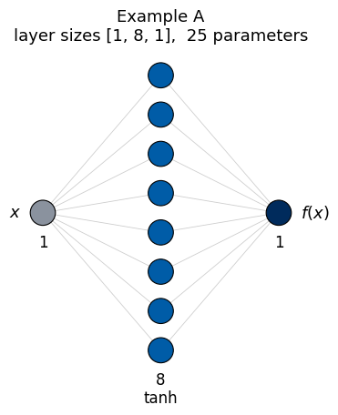
3.1 The container nn.Sequential
nn.Sequential(layer_1, layer_2, ...) stores the layers in order, and calling the model applies them one after another to the input. This is the shortest way to write a network whose computation is a plain chain of layers, as is the case for Example A.
The layers are numbered 0, 1, 2 in the order given, and every parameter carries the number of its layer in its name. Listing them also lets us check the parameter count against the formula of Section 1, which for \([1, N, 1]\) gives \(N\cdot 2 + 1\cdot(N+1) = 3N+1\).
Code
for name, p in model_seq.named_parameters():print(f"{name:10s} shape {tuple(p.shape)}")n_params =sum(p.numel() for p in model_seq.parameters())print("total number of parameters:", n_params, " (formula: 3N + 1 =", 3* N +1, ")")print("first layer:", model_seq[0]) # layers can be accessed by index
0.weight shape (8, 1)
0.bias shape (8,)
2.weight shape (1, 8)
2.bias shape (1,)
total number of parameters: 25 (formula: 3N + 1 = 25 )
first layer: Linear(in_features=1, out_features=8, bias=True)
3.2 A class derived from nn.Module
The same network can be written as a class. In __init__ the layers are created and stored as attributes, which registers their parameters with the model; the method forward describes the computation.
Code
class OneHiddenLayer(nn.Module):"""f(x) = W2 tanh(W1 x + b1) + b2 with N hidden nodes."""def__init__(self, n_hidden):super().__init__() # set up the internal bookkeeping of nn.Moduleself.hidden = nn.Linear(1, n_hidden) # first layer: 1 -> n_hiddenself.activation = nn.Tanh()self.output = nn.Linear(n_hidden, 1) # second layer: n_hidden -> 1def forward(self, x): h =self.activation(self.hidden(x)) # hidden layer: shape (B, n_hidden)returnself.output(h) # output: shape (B, 1)torch.manual_seed(0)model_cls = OneHiddenLayer(N)print(model_cls)for name, p in model_cls.named_parameters():print(f"{name:15s} shape {tuple(p.shape)}")
The parameter names now come from the attribute names (hidden.weight, …) instead of layer numbers; the shapes are the same.
3.3 Equivalence of the two constructions
The two models were initialised with the same random seed and their layers were created in the same order, so they even start with the same random numbers. To make the comparison independent of this, we copy the parameters of model_seq into model_cls explicitly and then compare the outputs on a grid of inputs.
The copy is done with a.copy_(b), which writes the values of b into the existing tensor a (the trailing underscore marks a method that changes the tensor in place). An assignment model_cls.hidden.weight = model_seq[0].weight would not copy anything: both models would then share one and the same tensor, and training one of them would change the other.
Code
with torch.no_grad(): # copying values is not part of any gradient computation model_cls.hidden.weight.copy_(model_seq[0].weight) model_cls.hidden.bias.copy_(model_seq[0].bias) model_cls.output.weight.copy_(model_seq[2].weight) model_cls.output.bias.copy_(model_seq[2].bias)x = torch.linspace(-3, 3, 200).reshape(-1, 1) # a batch of 200 inputs, shape (200, 1)with torch.no_grad(): y_seq, y_cls = model_seq(x), model_cls(x)print("input shape :", tuple(x.shape), " output shape:", tuple(y_seq.shape))print("max |difference| between the two models:", (y_seq - y_cls).abs().max().item())
input shape : (200, 1) output shape: (200, 1)
max |difference| between the two models: 0.0
3.4 The forward pass from the stored matrices
To see that nothing is hidden inside the model, we repeat its computation with the stored matrices, following the formula of Section 1, and compare the result with model_seq(x). The argument of the activation, \(W^{(1)}_i x + b^{(1)}_i\), is called the pre-activation of node \(i\); plotting the activated values \(\tanh(W^{(1)}_i x + b^{(1)}_i)\) shows how the output is assembled from the hidden nodes. In the left panel, ax.plot(x, h) receives an array h with \(N\) columns; matplotlib then draws one curve per column, i.e. one curve per hidden node.
Code
W1, b1 = model_seq[0].weight, model_seq[0].bias # shapes (N, 1) and (N,)W2, b2 = model_seq[2].weight, model_seq[2].bias # shapes (1, N) and (1,)with torch.no_grad(): pre_activation = x @ W1.T + b1 # (200, 1) @ (1, N) + (N,) -> (200, N) h = torch.tanh(pre_activation) # (200, N): the N hidden nodes for every input y_hand = h @ W2.T + b2 # (200, N) @ (N, 1) + (1,) -> (200, 1)print("shapes:", tuple(pre_activation.shape), tuple(h.shape), tuple(y_hand.shape))print("max |model - by hand|:", (y_seq - y_hand).abs().max().item(), " (rounding of float32 numbers, about 1e-7)")fig, axes = plt.subplots(1, 2, figsize=(13, 4))axes[0].plot(x, h, lw=1)axes[0].set_title(r"the $N$ hidden nodes $\tanh(W^{(1)}_i x + b^{(1)}_i)$"); axes[0].set_xlabel("$x$"); axes[0].set_ylabel("$h_i(x)$")axes[1].plot(x, y_seq, "k", lw=2)axes[1].set_title("output $f(x)$ = weighted sum of the hidden nodes + $b^{(2)}$"); axes[1].set_xlabel("$x$"); axes[1].set_ylabel("$f(x)$")fig.tight_layout(); plt.show()
shapes: (200, 8) (200, 8) (200, 1)
max |model - by hand|: 1.1920928955078125e-07 (rounding of float32 numbers, about 1e-7)
Each curve on the left is a smoothed step \(\tanh(W_i x + b_i)\) centred at \(x = -b_i/W_i\); \(|W_i|\) sets its steepness and the sign of \(W_i\) its direction. The initial weights are small (\(|W_i| \le 1\)), so the steps are gentle, and a node with \(W_i\) close to zero is almost constant (two such nodes appear here). The output on the right is the sum of these curves with the weights \(W^{(2)}_i\), plus \(b^{(2)}\). Training will move the centres, steepnesses and weights.
3.5 Explicit parameters and einsum
A third style writes the parameters as nn.Parameter tensors and the forward pass as index formulas with torch.einsum. For a batch \(x_{b}\) the layer formulas read \(h_{bj} = \tanh\big(\sum_i x_{bi} W^{(1)}_{ji} + b^{(1)}_j\big)\) and \(f_{bk} = \sum_j h_{bj}W^{(2)}_{kj} + b^{(2)}_k\), which einsum takes literally: "bi,ji->bj" means a sum over \(i\) that keeps the batch index \(b\).
This is still a class derived from nn.Module; what changes is that nothing is hidden in nn.Linear. The price is that the initialisation must be written explicitly. The class below reproduces PyTorch’s default for nn.Linear, uniform in \([-1/\sqrt{n_{\rm in}}, 1/\sqrt{n_{\rm in}}]\) for weights and biases. The factor \(1/\sqrt{n_{\rm in}}\) keeps the sum \(\sum_i W_{ji} h_i\) over the \(n_{\rm in}\) inputs of a layer of order one whatever the width of the layer, so that the \(\tanh\) nodes start neither saturated nor all near zero.
Two functions appear here for the first time. torch.empty(n, m) reserves memory for a tensor of shape (n, m) without setting its values (the entries are whatever was in memory), and .uniform_(a, b) then overwrites the entries, in place, with random numbers distributed uniformly in \([a, b]\). After copying the parameters of model_seq into the new model, we compare the two outputs once more.
Code
class OneHiddenLayerEinsum(nn.Module):# f(x) = W2 tanh(W1 x + b1) + b2, written with explicit parameters and einsumdef__init__(self, n_hidden, n_in=1, n_out=1):super().__init__() bound1, bound2 =1/ n_in**0.5, 1/ n_hidden**0.5# nn.Parameter registers a tensor as trainable; uniform_(a, b) fills it with uniform random numbersself.W1 = nn.Parameter(torch.empty(n_hidden, n_in).uniform_(-bound1, bound1)) # (N, n_in), as in nn.Linearself.b1 = nn.Parameter(torch.empty(n_hidden).uniform_(-bound1, bound1)) # (N,)self.W2 = nn.Parameter(torch.empty(n_out, n_hidden).uniform_(-bound2, bound2)) # (n_out, N)self.b2 = nn.Parameter(torch.empty(n_out).uniform_(-bound2, bound2)) # (n_out,)def forward(self, x): # x: (B, n_in) h = torch.tanh(torch.einsum("bi,ji->bj", x, self.W1) +self.b1) # h_bj = tanh(sum_i x_bi W1_ji + b1_j)return torch.einsum("bj,kj->bk", h, self.W2) +self.b2 # f_bk = sum_j h_bj W2_kj + b2_kmodel_ein = OneHiddenLayerEinsum(N)print("parameters:", [(name, tuple(p.shape)) for name, p in model_ein.named_parameters()])with torch.no_grad(): # copy the parameters of the Sequential model model_ein.W1.copy_(model_seq[0].weight); model_ein.b1.copy_(model_seq[0].bias) model_ein.W2.copy_(model_seq[2].weight); model_ein.b2.copy_(model_seq[2].bias)print("max |Sequential - einsum model|:", (model_seq(x) - model_ein(x)).abs().max().item())
All three ways give the same function. Way 3 is useful for teaching (the code is the formula), for operations that are not a plain matrix product (contractions over several axes, e.g. in attention layers of transformers or in tensor-network models used in physics), and for layers with unusual parameter shapes. For ordinary dense layers nn.Linear is preferable: it is equally fast (for such products einsum calls the same matrix-multiplication routine), shorter, and its initialisation is handled by PyTorch.
The network is untrained: its parameters are random, so \(f(x)\) is a random smooth function. Training (Section 10) changes the parameters so that \(f\) approximates data.
Whichever construction is chosen, the resulting models are used in exactly the same way afterwards: model(x), model.parameters(), training. The choice depends only on how the data flow through the model, and Section 8.3 discusses it in detail.
We build Example B with nn.Sequential and with a class, and compare both parameter counts with the formula \(\sum_l n_l(n_{l-1}+1)\).
Code
# Way 1: nn.Sequentialmodel_B_seq = nn.Sequential( nn.Linear(1, 16), nn.Tanh(), # hidden layer 1 nn.Linear(16, 16), nn.Tanh(), # hidden layer 2 nn.Linear(16, 1), # output layer (no activation))# Way 2: a classclass TwoHiddenLayers(nn.Module):def__init__(self, n1, n2):super().__init__()self.layer1 = nn.Linear(1, n1)self.layer2 = nn.Linear(n1, n2)self.layer3 = nn.Linear(n2, 1)def forward(self, x): h1 = torch.tanh(self.layer1(x)) # the activation can also be applied as a function h2 = torch.tanh(self.layer2(h1))returnself.layer3(h2)model_B_cls = TwoHiddenLayers(16, 16)for model in [model_B_seq, model_B_cls]:# type(model) is the class of the object, and .__name__ its name as a stringprint(type(model).__name__, ": parameters =", sum(p.numel() for p in model.parameters())," formula:", 16* (1+1) +16* (16+1) +1* (16+1))
In the einsum style, the parameters of all layers of Example B are kept in a nn.ParameterList, and forward applies the same einsum formula to every layer.
The loop over the layers uses zip(layer_sizes[:-1], layer_sizes[1:]). For layer_sizes = [1, 16, 16, 1], layer_sizes[:-1] is [1, 16, 16] (the last entry dropped) and layer_sizes[1:] is [16, 16, 1] (the first entry dropped); zip pairs them into (1, 16), (16, 16), (16, 1), the input and output sizes of every layer. This idiom is used for all automatically built networks below.
Code
class MLPEinsum(nn.Module):def__init__(self, layer_sizes):super().__init__()self.weights, self.biases = nn.ParameterList(), nn.ParameterList() # lists that register their parametersfor n_in, n_out inzip(layer_sizes[:-1], layer_sizes[1:]): bound =1/ n_in**0.5self.weights.append(nn.Parameter(torch.empty(n_out, n_in).uniform_(-bound, bound)))self.biases.append(nn.Parameter(torch.empty(n_out).uniform_(-bound, bound)))def forward(self, h): n_layers =len(self.weights)for l, (W, b) inenumerate(zip(self.weights, self.biases)): h = torch.einsum("bi,ji->bj", h, W) + b # the same formula for every layerif l < n_layers -1: # no activation after the last layer h = torch.tanh(h)return hmodel_B_ein = MLPEinsum([1, 16, 16, 1])print("parameters:", sum(p.numel() for p in model_B_ein.parameters()), "(as for the other two ways: 321)")
parameters: 321 (as for the other two ways: 321)
In the class, the activation is applied with the function torch.tanh instead of a layer object nn.Tanh(): activations have no parameters, so both forms are equivalent. The parameter count follows \(n_1(n_0+1) + n_2(n_1+1) + n_3(n_2+1) = 32 + 272 + 17 = 321\).
5. Example C: several inputs and several outputs
Nothing changes in the construction except the sizes of the first and the last layer. As a physics example, the input is a point \((x, y)\) in a plane and the output three numbers, e.g. a potential \(V\) and the two components of the force \((F_x, F_y)\), which gives layer sizes \([2, 32, 32, 3]\). The input batch has shape (B, 2) (one row per point) and the output (B, 3); below we pass five random points through the untrained network to check these shapes.
Five input points give five rows of three outputs. Only the first Linear layer (input size 2) and the last one (output size 3) differ from Example B.
6. Example D: a classifier for images
6.1 Classification and the MNIST data
In Examples A–C the network returned a number (regression). Here it has to decide which of several categories an input belongs to (classification). The categories are called classes. This word has nothing to do with Python classes: it is the standard name for the possible answers of a classifier.
The data set is the MNIST database (Modified National Institute of Standards and Technology), the standard first example of image classification (lecture; Section 14 trains the network of this example on it): 70 000 grey-scale images of handwritten digits, 60 000 for training and 10 000 for testing, each of \(28\times28\) pixels and each labelled with the digit it shows. The classes are therefore the ten digits \(0, 1, \dots, 9\), and the label of an image is its class, an integer from 0 to 9.
The package torchvision (installed in Colab together with PyTorch) contains a loader for MNIST. datasets.MNIST(root="data", train=False, download=True) downloads the data (about 12 MB, a few seconds) into a folder data the first time it is called and reads it from there afterwards; train=False selects the 10 000 test images, which are enough for looking at the data. The download prints a long progress bar, which contextlib.redirect_stdout and redirect_stderr send into an unused string buffer (io.StringIO()) instead of the screen. If the download fails (for example without internet access), the except branch replaces the images by random numbers, so that the rest of the notebook still runs.
The attribute .data holds the images as one tensor of shape \((10000, 28, 28)\) with integer pixel values from 0 (background) to 255 (full ink intensity), and .targets holds the labels. torch.bincount(labels) counts how often each value \(0, 1, \dots, 9\) occurs, which tells us whether the classes are balanced.
Code
import contextlib, iotry:from torchvision import datasetswith contextlib.redirect_stdout(io.StringIO()), contextlib.redirect_stderr(io.StringIO()): mnist = datasets.MNIST(root="data", train=False, download=True) images_raw, labels = mnist.data, mnist.targetsprint("MNIST test set loaded")exceptExceptionas err:print("MNIST could not be loaded:", err)print("random images are used instead") images_raw = torch.randint(0, 256, (10000, 28, 28), dtype=torch.uint8) labels = torch.randint(0, 10, (10000,))print("images:", tuple(images_raw.shape), images_raw.dtype," pixel values from", images_raw.min().item(), "to", images_raw.max().item())print("labels:", tuple(labels.shape), " first ten labels:", labels[:10].tolist())print("number of images per class 0..9:", torch.bincount(labels).tolist())
MNIST test set loaded
images: (10000, 28, 28) torch.uint8 pixel values from 0 to 255
labels: (10000,) first ten labels: [7, 2, 1, 0, 4, 1, 4, 9, 5, 9]
number of images per class 0..9: [980, 1135, 1032, 1010, 982, 892, 958, 1028, 974, 1009]
The ten classes are about equally frequent (between 892 and 1135 images each), so a classifier that guesses at random is right in about 10% of the cases.
To see what the network will have to recognise, we show three examples of every class. torch.nonzero(labels == k) returns the positions of all images with label \(k\) (as a column, hence [:3, 0] for the first three); imshow draws a \(28\times28\) array as an image, and the colour map "gray_r" (reversed grey) shows 0 as white and 255 as black, as on paper.
Code
fig, axes = plt.subplots(3, 10, figsize=(12, 4))for k inrange(10): positions = torch.nonzero(labels == k)[:3, 0] # first three images of class kfor row inrange(3): ax = axes[row, k] ax.imshow(images_raw[positions[row]], cmap="gray_r") ax.set_xticks([]); ax.set_yticks([])if row ==0: ax.set_title(f"class {k}")fig.tight_layout(); plt.show()
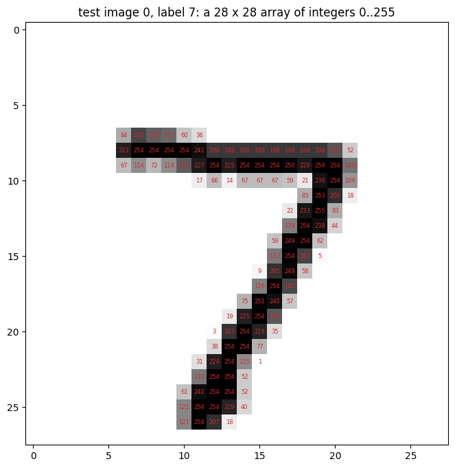
The network, however, does not see a picture but \(28\times28 = 784\) numbers. The next figure shows the first test image with its pixel values printed in the cells (only the non-zero ones; all other pixels are 0).
Code
img = images_raw[0]fig, ax = plt.subplots(figsize=(8, 8))ax.imshow(img, cmap="gray_r")for i inrange(28): # rowfor j inrange(28): # columnif img[i, j] >0: ax.text(j, i, str(img[i, j].item()), ha="center", va="center", fontsize=6, color="tab:red")ax.set_title(f"test image 0, label {labels[0].item()}: a 28 x 28 array of integers 0..255")plt.show()
6.2 The network
The network for these images is the one of the lecture: a \(28\times28\) image is flattened to a vector of \(784\) pixel values, passed through two hidden layers with the rectified linear unit (ReLU) activation, and mapped to \(10\) outputs, one per class. The outputs are arbitrary real numbers (logits); softmax turns them into probabilities \(q_k\), \(k = 0, \dots, 9\), which are compared with the true label by the cross-entropy (lecture). The predicted class is the one with the largest probability (argmax). nn.Flatten() is a layer without parameters that reshapes (B, 28, 28) into (B, 784).
The pixel values are divided by 255 and converted to floating-point numbers (.float()), so that the inputs lie in \([0, 1]\). Inputs of order one are needed because the default initialisation of nn.Linear assumes them; Section 10.1 explains what happens otherwise.
Two choices differ from Examples A–C. The first is ReLU instead of tanh. \(\mathrm{ReLU}(z) = \max(0, z)\) is cheap to compute and does not saturate for \(z > 0\), which makes it the standard choice for classifiers and deep networks. A ReLU network is piecewise linear in its input, so for regression of smooth physical functions (Examples A–C, Section 10) \(\tanh\) is preferred: the fitted function is then smooth and can be differentiated any number of times. The second choice is the widths 128 and 64. They are illustrative; widths of order 10–1000 are all in use for this task. Decreasing widths (\(784\to128\to64\to10\)), which compress the input step by step, are a common convention but not a requirement, and the same holds for the widths 8, 16 and 32 in Examples A–C.
Before any training we pass five test images and then the whole test set through the network and look at its probabilities and predictions.
Code
draw_network([784, 128, 64, 10], activations=["ReLU", "ReLU"], title="Example D", output_labels=[f"{k}"for k inrange(10)])plt.show()model_D = nn.Sequential( nn.Flatten(), # (B, 28, 28) -> (B, 784) nn.Linear(784, 128), nn.ReLU(), nn.Linear(128, 64), nn.ReLU(), nn.Linear(64, 10), # logits, one per class)images = images_raw.float() /255# integers 0..255 -> floats in [0, 1]logits = model_D(images[:5]) # the first five test imagesprobs = torch.softmax(logits, dim=1) # softmax over the class dimensionprint("logits shape:", tuple(logits.shape), " largest |logit|:", round(logits.abs().max().item(), 3))# .detach() is needed before .numpy() because probs was computed with gradient trackingfor i inrange(5):print(f"image {i}: true class {labels[i].item()}, predicted {probs[i].argmax().item()}, probabilities", probs[i].detach().numpy().round(2))# float32 rounding: the sum differs from 1 by about 1e-7print("sum of the probabilities of image 0:", probs[0].sum().item())predicted = model_D(images).argmax(dim=1) # predicted class of all 10 000 test imagesprint(f"fraction of correctly classified test images: {(predicted == labels).float().mean().item():.3f}")print("how often each class 0..9 is predicted:", torch.bincount(predicted, minlength=10).tolist())print("parameters:", sum(p.numel() for p in model_D.parameters()))
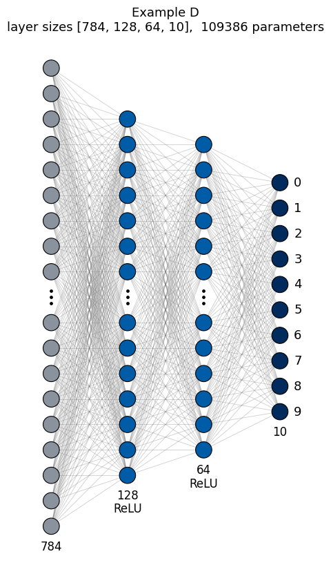
logits shape: (5, 10) largest |logit|: 0.211
image 0: true class 7, predicted 7, probabilities [0.11 0.09 0.11 0.09 0.09 0.11 0.08 0.12 0.09 0.11]
image 1: true class 2, predicted 7, probabilities [0.11 0.09 0.1 0.09 0.09 0.11 0.09 0.12 0.09 0.12]
image 2: true class 1, predicted 7, probabilities [0.11 0.09 0.11 0.09 0.09 0.11 0.09 0.11 0.09 0.11]
image 3: true class 0, predicted 7, probabilities [0.11 0.09 0.1 0.09 0.1 0.11 0.09 0.12 0.09 0.11]
image 4: true class 4, predicted 7, probabilities [0.11 0.09 0.11 0.09 0.09 0.11 0.09 0.12 0.09 0.11]
sum of the probabilities of image 0: 0.9999999403953552
fraction of correctly classified test images: 0.105
how often each class 0..9 is predicted: [44, 0, 0, 0, 0, 4, 0, 9918, 0, 34]
parameters: 109386
The untrained classifier assigns roughly equal probabilities (\(\approx 0.1\)) to all ten classes. The largest of these nearly equal numbers, however, belongs to the same class for almost every image (class 7 for 9918 of the 10 000 images, in the line “how often each class 0..9 is predicted” printed above): the small differences between the ten logits come mostly from the random initial weights and biases, which are the same for every input, and only a little from the image. The fraction of correct answers, 0.105, is therefore roughly the share of that one class among the test images, no better than guessing. The probabilities are all close to 1/10 because of the initialisation: the ten logits of the untrained network are small (the largest absolute value is 0.211), and the softmax \(q_k = e^{z_k}/\sum_j e^{z_j}\) of ten nearly equal numbers is nearly \(1/10\) each. Training with the cross-entropy loss (Section 14) changes the \(109\,386\) parameters so that the probability of the correct class approaches 1. Almost all of these parameters belong to the first layer (\(784\times128\) weights), as the summary in Section 9 shows.
7. Building networks automatically from a list of layer sizes
Writing every layer separately is error-prone for deep networks. Since a dense network is determined by the list \([n_0, \dots, n_L]\) and the activation, the layers can be created in a loop.
7.1 With nn.Sequential
The function make_mlp below collects the layers in a Python list and passes it to nn.Sequential(*layers); the star unpacks the list into separate arguments. The name stands for multilayer perceptron (MLP), the traditional name of a dense network.
Code
def make_mlp(layer_sizes, activation=nn.Tanh):"""Dense network with the given layer sizes; `activation` (a class such as nn.Tanh) after every hidden layer.""" layers = []for i inrange(len(layer_sizes) -1): n_in, n_out = layer_sizes[i], layer_sizes[i +1] layers.append(nn.Linear(n_in, n_out)) is_last_layer = (i ==len(layer_sizes) -2)ifnot is_last_layer: # no activation after the output layer layers.append(activation()) # a new activation object for every layerreturn nn.Sequential(*layers)model_auto = make_mlp([1, 32, 32, 32, 1], activation=nn.Tanh)print(model_auto)print("parameters:", sum(p.numel() for p in model_auto.parameters()))draw_network([1, 32, 32, 32, 1], activations=["tanh"] *3, title="make_mlp([1, 32, 32, 32, 1])")plt.show()
The same function produces the networks of Sections 3–5; Example D (Section 6) additionally needs nn.Flatten() in front and ReLU activations (activation=nn.ReLU). For instance make_mlp([1, 8, 1]) is Example A and make_mlp([2, 32, 32, 3]) is Example C. Width and depth can now be varied with one argument, and we print the parameter count for an increasing number of hidden layers.
Code
for depth in [1, 2, 4, 8]: sizes = [1] + [32] * depth + [1] m = make_mlp(sizes)print(f"{depth} hidden layers of width 32: layer sizes {sizes}, parameters = {sum(p.numel() for p in m.parameters())}")
Every additional hidden layer of width 32 adds \(32\times(32+1) = 1056\) parameters.
7.2 With a class and nn.ModuleList
In a class, a variable number of layers is stored in an nn.ModuleList, a list that registers the parameters of its elements. The loop over the layers is then placed in forward. This form is useful when forward has to do something between the layers (Section 8).
The argument activation has a different form in the two constructions. make_mlp receives a class (nn.Tanh) and creates a new layer object activation() for every position in the chain, because nn.Sequential accepts only layer objects. In forward of the class below any function can be called directly, so the functiontorch.tanh is passed.
Code
class MLP(nn.Module):def__init__(self, layer_sizes, activation=torch.tanh):super().__init__()self.layers = nn.ModuleList( [nn.Linear(n_in, n_out) for n_in, n_out inzip(layer_sizes[:-1], layer_sizes[1:])] )self.activation = activationdef forward(self, x):for layer inself.layers[:-1]: # all layers except the last one x =self.activation(layer(x))returnself.layers[-1](x) # last layer without activationmodel_list = MLP([1, 32, 32, 32, 1])print("parameters:", sum(p.numel() for p in model_list.parameters()))print("number of Linear layers:", len(model_list.layers))
parameters: 2209
number of Linear layers: 4
7.3 Layers in a plain Python list
A common mistake is to keep the layers in an ordinary Python list. nn.Module does not see them: their parameters are not registered, model.parameters() does not contain them, and an optimiser would never change them. No error is raised, as the following class shows: its forward pass works, but it has no parameters.
Code
class BrokenMLP(nn.Module):def__init__(self, layer_sizes):super().__init__()self.layers = [nn.Linear(a, b) for a, b inzip(layer_sizes[:-1], layer_sizes[1:])] # plain list: WRONGdef forward(self, x):for layer inself.layers[:-1]: x = torch.tanh(layer(x))returnself.layers[-1](x)broken = BrokenMLP([1, 32, 32, 1])print("output shape:", tuple(broken(torch.zeros(3, 1)).shape), " <- forward works")print("registered parameters:", sum(p.numel() for p in broken.parameters()), " <- but there are none")
output shape: (3, 1) <- forward works
registered parameters: 0 <- but there are none
8. Architectures beyond nn.Sequential
8.1 A skip (residual) connection
In a residual layer the input is added to the output: \(\mathbf h \mapsto \mathbf h + \tanh(\mathbf W\mathbf h + \mathbf b)\). Such connections make very deep networks trainable; residual networks (ResNets) are built from them. The addition of the input cannot be expressed as a chain of layers, so a class is needed.
Code
class ResidualMLP(nn.Module):"""input layer -> n_blocks residual blocks of width `width` -> output layer."""def__init__(self, n_in, width, n_blocks, n_out):super().__init__()self.input_layer = nn.Linear(n_in, width)self.blocks = nn.ModuleList([nn.Linear(width, width) for _ inrange(n_blocks)])self.output_layer = nn.Linear(width, n_out)def forward(self, x): h = torch.tanh(self.input_layer(x))for block inself.blocks: h = h + torch.tanh(block(h)) # skip connection: the input of the block is added to its outputreturnself.output_layer(h)res = ResidualMLP(n_in=1, width=16, n_blocks=4, n_out=1)print("output shape:", tuple(res(torch.zeros(5, 1)).shape), " parameters:", sum(p.numel() for p in res.parameters()))
output shape: (5, 1) parameters: 1137
In the drawing of this network the four residual blocks are the four Linear layers of width 16 between the hidden columns, and each orange arrow is a skip connection: the values of a hidden layer are added to the output of the next block, \(\mathbf h \mapsto \mathbf h + \tanh(\mathbf W\mathbf h + \mathbf b)\). The arrows carry no parameters, so the count in the title is the same 1137 as printed above.
A wavefunction of a particle in a box \([0, 1]\) must vanish at \(x = 0\) and \(x = 1\). An unconstrained network \(\mathrm{NN}(x)\) does not satisfy this, but the ansatz \[\psi(x) = x\,(1-x)\,\mathrm{NN}(x)\] does, for every value of the parameters, so the boundary conditions are never violated during training. The network inside can be any model, e.g. one made with make_mlp. We evaluate the untrained \(\psi\) at the two walls to see the constraint at work.
Code
class BoxWavefunction(nn.Module):"""psi(x) = x (1 - x) NN(x): vanishes at x = 0 and x = 1 for any parameters of NN."""def__init__(self, layer_sizes):super().__init__()self.net = make_mlp(layer_sizes) # a network inside a network: its parameters are registered as welldef forward(self, x):return x * (1- x) *self.net(x)psi = BoxWavefunction([1, 16, 16, 1])x_box = torch.linspace(0, 1, 101).reshape(-1, 1)with torch.no_grad(): values = psi(x_box)print("psi(0) =", values[0].item(), " psi(1) =", values[-1].item())print("parameters:", sum(p.numel() for p in psi.parameters()), "(all inside psi.net)")
The trainable part of \(\psi\) is the dense network \(\mathrm{NN}\) with layer sizes \([1, 16, 16, 1]\) drawn below; the factor \(x(1-x)\) is a fixed formula applied to its output and has no parameters, so all 321 parameters belong to \(\mathrm{NN}\).
Code
draw_network([1, 16, 16, 1], activations=["tanh", "tanh"], title="the network NN inside psi(x) = x (1 - x) NN(x)", input_labels=["$x$"], output_labels=[r"$\mathrm{NN}(x)$"])plt.show()
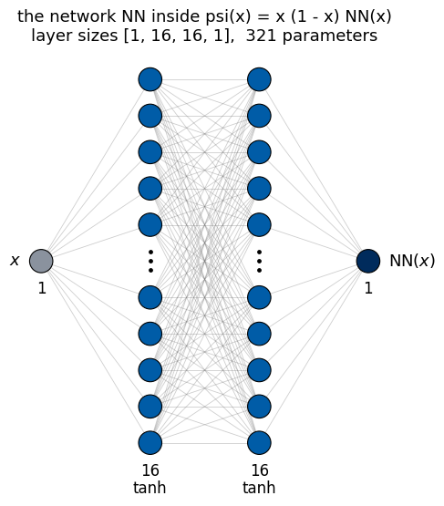
Both boundary values are zero. The printed sign of \(-0.0\) is an artefact of floating-point numbers, which have a signed zero: \(0\) multiplied by a negative number gives \(-0.0\), which equals \(0.0\) in every comparison.
8.3 Choosing between nn.Sequential and a class
nn.Sequential describes exactly one kind of computation: one input tensor passes through a fixed chain of layers, and the output of each layer is the input of the next one. Whenever the computation can be drawn as such a chain, nn.Sequential is the shortest and clearest choice. For everything else a class with a forward method is needed, because forward can contain arbitrary Python code. The table lists typical situations.
situation
nn.Sequential
class
chain of layers, one input, one output
yes
yes (longer)
a layer is skipped or its input is added to its output (skip connection, 8.1)
no
yes
a fixed formula around the network, e.g. a physical constraint (8.2)
no
yes
the same layer (same weights) is used several times, e.g. to enforce a symmetry
no
yes
several inputs (e.g. a position and a parameter) or several outputs treated differently
no
yes
intermediate results are needed (e.g. for analysis)
only by looping over the layers explicitly
yes, returned by forward
a trainable number that is not part of any layer (nn.Parameter)
no
yes
if statements or loops in the computation
no
yes
In practice the two are combined: the chain-like parts of a model are written as nn.Sequential blocks (or built with make_mlp), and a class connects them. The following class shows several items of the table at once: an even wavefunction \(\psi(x) = A\,[\,g(x) + g(-x)\,]\), where the same network \(g\) is applied twice (shared weights enforce \(\psi(-x) = \psi(x)\)), \(A\) is a trainable number outside any layer, and forward can also return the intermediate values \(g(\pm x)\). We evaluate \(\psi\) on a grid symmetric around 0 and compare \(\psi(x)\) with \(\psi(-x)\).
Code
class EvenFunction(nn.Module):# psi(x) = A * (g(x) + g(-x)): even in x for any parameters of g and any Adef__init__(self, layer_sizes):super().__init__()self.g = make_mlp(layer_sizes) # a Sequential block inside the classself.amplitude = nn.Parameter(torch.ones(1)) # a trainable number that is not part of any layer;# it starts at 1 (any non-zero value works, it is trained)def forward(self, x, return_parts=False): g_plus =self.g(x) # the same network (same weights) ... g_minus =self.g(-x) # ... applied a second time psi =self.amplitude * (g_plus + g_minus)if return_parts: # ordinary Python control flowreturn psi, g_plus, g_minusreturn psieven = EvenFunction([1, 16, 16, 1])x_sym = torch.linspace(-2, 2, 9).reshape(-1, 1)with torch.no_grad(): psi_vals, gp, gm = even(x_sym, return_parts=True)print("psi(x) :", psi_vals.squeeze().numpy().round(4))print("psi(-x) :", psi_vals.flip(0).squeeze().numpy().round(4), " <- identical: the symmetry holds exactly")print("parameters:", [name for name, _ in even.named_parameters()][:3], "...")print("number of parameters:", sum(p.numel() for p in even.parameters()), "= parameters of g + 1 (the amplitude)")
psi(x) : [-0.2476 -0.2854 -0.3438 -0.4036 -0.4297 -0.4036 -0.3438 -0.2854 -0.2476]
psi(-x) : [-0.2476 -0.2854 -0.3438 -0.4036 -0.4297 -0.4036 -0.3438 -0.2854 -0.2476] <- identical: the symmetry holds exactly
parameters: ['amplitude', 'g.0.weight', 'g.0.bias'] ...
number of parameters: 322 = parameters of g + 1 (the amplitude)
flip(0) reverses the order of the rows; since the grid is symmetric around 0, it turns the values at \(x\) into the values at \(-x\). The network \(g\) appears once in the list of parameters although it is used twice: its weights are shared.
The drawing shows the single network \(g\) that the class stores. It is evaluated twice, at \(x\) and at \(-x\), and the two outputs are added and multiplied by the amplitude \(A\). Shared weights mean exactly this: one set of weights, the one drawn here, serves both evaluations. Its 321 parameters plus the amplitude give the 322 printed above.
Code
draw_network([1, 16, 16, 1], activations=["tanh", "tanh"], title="g, evaluated at x and at -x with the same weights", input_labels=[r"$\pm x$"], output_labels=[r"$g(\pm x)$"])plt.show()
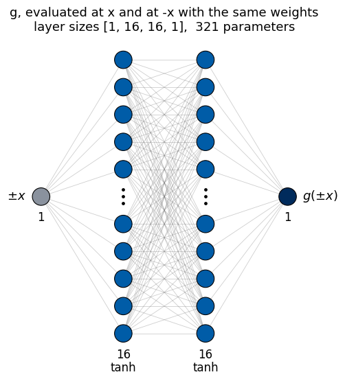
9. Inspecting a model
Three tools are used constantly. named_parameters() returns the names and tensors of all trainable parameters; state_dict() returns a dictionary name \(\to\) tensor with all parameters, which is what is saved to a file (Section 12); and passing a batch through the layers one by one while printing the shapes is the quickest way to find shape errors. The function summary below does the last of these for the classifier of Example D, printing the output shape and the parameter count of every layer.
Code
def summary(model, x):"""Print the output shape and the number of parameters of every layer of an nn.Sequential model for the input batch x."""print(f"{'layer':35s}{'output shape':15s} parameters")print(f"{'input':35s}{str(tuple(x.shape)):15s}") total =0for layer in model: # an nn.Sequential can be iterated over x = layer(x) n =sum(p.numel() for p in layer.parameters()) total += nprint(f"{str(layer):35s}{str(tuple(x.shape)):15s}{n}")print(f"total parameters: {total}")summary(model_D, images[:4]) # four MNIST test images (Section 6)
The shapes change only in the Flatten and Linear layers; activations keep the shape. The first Linear layer holds 92% of all parameters (100 480 of 109 386).
The state_dict of Example A contains the same four parameter tensors as named_parameters(), stored in a dictionary name \(\to\) tensor.
Code
sd = model_seq.state_dict()for key, value in sd.items():print(f"{key:10s}{tuple(value.shape)}")
A second kind of drawing comes from the package torchview, a small Python library that draws PyTorch models. Its function draw_graph passes a batch of the given shape through the model, records every module it meets and draws the data flow as a graph: each box is one module of Example D (Flatten, Linear, ReLU) with the shapes of its input and output tensors, the first dimension being the batch. Where draw_network shows nodes and weights, this view shows layers and tensor shapes, and it works for any model, including models with skip connections or several inputs, which makes it a quick check of the shapes. torchview draws with Graphviz, a program that lays out graphs of boxes and arrows, and is not part of the standard Colab installation (%pip install torchview installs it); if it is missing, the cell prints a message instead of the graph.
Code
try:from torchview import draw_graph graph = draw_graph(model_D, input_size=(4, 28, 28)) # a batch of 4 images of 28 x 28 pixels display(graph.visual_graph)exceptExceptionas err: # torchview or Graphviz not installedprint("torchview drawing not available:", err)
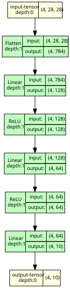
10. The training loop in detail
10.1 A damped oscillation and the data split
To have something to train on, we simulate a measurement of a damped oscillation, \(y(t) = e^{-0.2t}\cos(2t)\), at \(K = 200\) random times \(t\in[0, 10]\) with Gaussian noise of standard deviation \(0.05\). The data are split at random into three parts with different roles. The training set (120 points) is used to change the parameters. The validation set (40 points) is used to monitor training and to make choices (architecture, learning rate, number of epochs); the parameters never see it, but our decisions do. The test set (40 points) is used once, at the very end, to estimate how well the final model works on new data; because no decision was based on it, this estimate is not biased by our choices.
The fractions 60 / 20 / 20 % are a convention; splits between about 60–80 % for training and 10–20 % each for validation and test are common. The exact values are not critical, but the validation and test sets must contain enough points for their mean losses to be meaningful averages. The noise level \(0.05\) is also arbitrary: small compared with the amplitude 1 of the signal, but large enough to be visible in the plot.
Two practical details matter. PyTorch layers expect inputs of shape (B, n_in), here (B, 1), and the targets must have the same shape as the outputs, (B, 1). Moreover, the input \(t\in[0, 10]\) is rescaled to \([-1, 1]\). With one input, the default initialisation of nn.Linear draws the first-layer weights and biases uniformly from \([-1, 1]\) (the bound is \(1/\sqrt{n_{\rm in}} = 1\)), so the pre-activations \(W t + b\) are of order \(|t|\). For \(t\sim10\) most of them would lie far in the flat part of \(\tanh\) (\(\tanh 3 \approx 0.995\)): these nodes would start saturated, their gradients would be small, and training would slow down (Section 13.4 shows the effect).
Two new operations appear in the code. torch.randperm(K) returns the integers \(0, \dots, K-1\) in random order; the first 120 of them become the training indices, and so on. It receives its own random-number generator torch.Generator().manual_seed(0), so that the split is reproducible and does not depend on how many random numbers were drawn earlier in the notebook. X_all[train_idx], indexing with a tensor of integers, selects the rows with these indices in this order; since inputs and targets are indexed with the same indices, every input stays paired with its target.
Code
def damped_oscillation(t):return np.exp(-0.2* t) * np.cos(2* t)rng = np.random.default_rng(0)K =200t_data = rng.uniform(0, 10, K)y_data = damped_oscillation(t_data) +0.05* rng.normal(size=K)def scale(t):"""Map t in [0, 10] to [-1, 1]."""return t /5.0-1.0# tensors of shape (K, 1); float32 is the PyTorch default and matches the model parametersX_all = torch.tensor(scale(t_data), dtype=torch.float32).reshape(-1, 1)Y_all = torch.tensor(y_data, dtype=torch.float32).reshape(-1, 1)perm = torch.randperm(K, generator=torch.Generator().manual_seed(0)) # random order of the indices 0..K-1train_idx, val_idx, test_idx = perm[:120], perm[120:160], perm[160:] # 120 / 40 / 40 pointsX_train, Y_train = X_all[train_idx], Y_all[train_idx]X_val, Y_val = X_all[val_idx], Y_all[val_idx]X_test, Y_test = X_all[test_idx], Y_all[test_idx]print("training set :", tuple(X_train.shape), tuple(Y_train.shape))print("validation set:", tuple(X_val.shape), tuple(Y_val.shape))print("test set :", tuple(X_test.shape), tuple(Y_test.shape), " <- not used until Section 12")t_plot = np.linspace(0, 10, 500)X_plot = torch.tensor(scale(t_plot), dtype=torch.float32).reshape(-1, 1)fig, ax = plt.subplots(figsize=(8, 3.5))ax.plot(t_plot, damped_oscillation(t_plot), "k", lw=1, label="true function (unknown in practice)")# t_data is a NumPy array, so it is indexed with the NumPy version of the index tensorax.plot(t_data[train_idx.numpy()], Y_train, "o", ms=4, label="training data")ax.plot(t_data[val_idx.numpy()], Y_val, "s", ms=4, label="validation data")ax.plot(t_data[test_idx.numpy()], Y_test, "^", ms=4, label="test data")ax.set_xlabel("$t$"); ax.set_ylabel("$y$"); ax.legend(fontsize=8); plt.show()
training set : (120, 1) (120, 1)
validation set: (40, 1) (40, 1)
test set : (40, 1) (40, 1) <- not used until Section 12
10.2 Model, loss function, optimiser
Training needs three objects. The model is make_mlp([1, 32, 32, 1]). The loss function nn.MSELoss() computes the mean squared error (MSE) \(\frac1B\sum_i (f(x_i) - y_i)^2\) of a batch, equivalent to torch.mean((pred - y)**2). The optimiser is an object from torch.optim that holds references to the parameters and implements the update rule; here it is plain stochastic gradient descent (SGD).
Two hidden layers of 32 nodes are a modest size for a one-dimensional function with about three periods of oscillation on the interval; Section 12 compares this choice with smaller and larger networks. The learning rate 0.1 of SGD is arbitrary here: the next cell performs a single step only, to check the update rule, and any value would serve. torch.manual_seed(1) immediately before the model is created fixes its initial parameters, so that the runs below start from the same point and can be compared; the value of the seed is arbitrary.
Code
torch.manual_seed(1)model = make_mlp([1, 32, 32, 1])loss_fn = nn.MSELoss()optimizer = torch.optim.SGD(model.parameters(), lr=0.1) # plain gradient descent first, to check it by hand
10.3 A single training step
One step consists of five lines: the forward pass, the loss, optimizer.zero_grad(), loss.backward() and optimizer.step(). We follow three of the parameters (the first three biases of the first layer) and their gradients through the step, and compare the result of optimizer.step() with the SGD update \(\theta \leftarrow \theta - \eta\,\partial\mathcal L/\partial\theta\), where \(\theta\) is any parameter, \(\mathcal L\) the loss and \(\eta\) the learning rate (lr).
Code
p = model[0].bias # a parameter tensor of shape (32,); we print its first 3 entriesprint("before the step: p[:3] =", p[:3].detach().numpy(), " p.grad =", p.grad)# 1) forward pass: predictions for the whole training setpred = model(X_train) # shape (120, 1)# 2) loss: a single number (a tensor with one element) that depends on all parametersloss = loss_fn(pred, Y_train)print("loss:", loss.item())# 3) reset the gradients stored from a previous step (here there are none yet, but this line is always needed)optimizer.zero_grad()# 4) backward pass: compute d loss / d parameter for every parameter, stored in .gradloss.backward()print("after backward(): p.grad[:3] =", p.grad[:3].numpy())p_old, grad_old = p.detach().clone(), p.grad.clone() # copies, for the check below# 5) update the parameters with the rule of the optimiseroptimizer.step()print("after step(): p[:3] =", p[:3].detach().numpy())print("p_old - lr * grad: ", (p_old -0.1* grad_old)[:3].numpy())print("max |difference|:", (p.detach() - (p_old -0.1* grad_old)).abs().max().item())
before the step: p[:3] = [ 0.6600598 -0.9111377 -0.9508084] p.grad = None
loss: 0.21944643557071686
after backward(): p.grad[:3] = [ 0.0114674 -0.01462021 0.01155732]
after step(): p[:3] = [ 0.6589131 -0.90967566 -0.95196414]
p_old - lr * grad: [ 0.6589131 -0.90967566 -0.95196414]
max |difference|: 0.0
Before the first backward() no gradient has been computed, so p.grad is None rather than a tensor of zeros. The copies p_old, grad_old are made with clone() because optimizer.step() changes p in place: without clone(), p_old would be a second name for the same memory and would change together with p. detach() excludes the copy from the gradient computation.
The difference printed above is exactly zero: the optimiser changed every parameter by \(-\eta\times\) its gradient, as gradient descent prescribes. More advanced optimisers (momentum, Adam) use the same .grad tensors but a different update rule.
10.4 The full-batch training loop
Repeating the five lines gives the training loop. In every iteration we also compute the validation loss, inside torch.no_grad(), since no gradients are needed for monitoring and skipping them saves memory and time. We use Adam (adaptive moment estimation, an optimiser that adapts the step size of every parameter using running averages of its gradients; see the lecture), which converges faster here.
The learning rate \(10^{-2}\) is a common starting value for Adam on small problems. In this example values between about \(3\cdot10^{-3}\) and \(3\cdot10^{-2}\) bring the training loss to the noise level within 2000 steps; with \(10^{-3}\) the loss decreases more slowly and reaches the noise level only near the end of the 2000 steps, and with \(10^{-1}\) the loss fluctuates from step to step. With \(10^{-2}\) the training loss is within a few per cent of its final value after about 1000 steps; the number of steps, 2000, leaves a margin and is otherwise arbitrary.
Code
torch.manual_seed(1)model = make_mlp([1, 32, 32, 1])optimizer = torch.optim.Adam(model.parameters(), lr=1e-2)n_steps =2000train_hist, val_hist = [], []t0 = time.perf_counter()for step inrange(n_steps): pred = model(X_train) # 1) forward loss = loss_fn(pred, Y_train) # 2) loss optimizer.zero_grad() # 3) reset gradients loss.backward() # 4) backward optimizer.step() # 5) updatewith torch.no_grad(): # monitoring only val_loss = loss_fn(model(X_val), Y_val) train_hist.append(loss.item()) val_hist.append(val_loss.item())print(f"{n_steps} steps in {time.perf_counter() - t0:.1f} s; final training loss {train_hist[-1]:.2e}, validation loss {val_hist[-1]:.2e}")print(f"noise variance 0.05^2 = {0.05**2:.1e}")
2000 steps in 17.3 s; final training loss 2.67e-03, validation loss 4.64e-03
noise variance 0.05^2 = 2.5e-03
The final training loss, \(2.67\cdot10^{-3}\), is to be compared with the noise variance printed next to it. The figure shows, on the left, the training and validation loss as functions of the step (logarithmic scale) and, on the right, the trained network on a dense grid of times together with the training data and the true function.
The training loss decreases to about the variance of the noise, \(0.05^2 = 2.5\cdot10^{-3}\): the remaining error is the noise in the data, which no model can predict. Indeed, if the network were exactly the true function \(g\), then \(f(t_i) - y_i = g(t_i) - (g(t_i) + \varepsilon_i) = -\varepsilon_i\), and the mean of \(\varepsilon_i^2\) over many points is the variance \(\sigma^2 = 0.05^2\). A training loss far below \(\sigma^2\) would mean that the network reproduces the noise itself. The validation loss is somewhat larger (\(4.64\cdot10^{-3}\)): with only 120 training points the network also fits part of the noise of these particular points, which does not carry over to new points. The difference between training and validation loss measures this effect; it becomes large when a network overfits.
11. Mini-batches, epochs and validation
11.1 Mini-batches
For large data sets the full-batch loss is too expensive to compute in every step. The training set is then split into mini-batches; every step uses one mini-batch, and one pass over all mini-batches is an epoch. The gradient of a mini-batch is a noisy estimate of the full gradient, which is why this is called stochastic gradient descent. PyTorch provides two helpers: TensorDataset(X, Y) pairs inputs with targets, and DataLoader(dataset, batch_size=..., shuffle=True) returns the mini-batches of one epoch, in a new random order every epoch.
The batch size is a free choice; powers of two between 16 and 256 are customary. Smaller batches give noisier gradients and more updates per epoch, larger batches the opposite. Here 32 is chosen so that an epoch of 120 samples consists of a few (four) steps, as the listing of the batches confirms.
Code
from torch.utils.data import TensorDataset, DataLoadertrain_set = TensorDataset(X_train, Y_train)loader = DataLoader(train_set, batch_size=32, shuffle=True)print("number of training samples:", len(train_set))print("mini-batches per epoch :", len(loader), " (= 120 / 32 rounded up; the last batch has 24 samples)")for i, (xb, yb) inenumerate(loader): # one epochprint(f" batch {i}: inputs {tuple(xb.shape)}, targets {tuple(yb.shape)}")
number of training samples: 120
mini-batches per epoch : 4 (= 120 / 32 rounded up; the last batch has 24 samples)
batch 0: inputs (32, 1), targets (32, 1)
batch 1: inputs (32, 1), targets (32, 1)
batch 2: inputs (32, 1), targets (32, 1)
batch 3: inputs (24, 1), targets (24, 1)
11.2 The loop with mini-batches
The five lines are the same as before; they are now inside a loop over the mini-batches, which is inside a loop over the epochs. With four mini-batches per epoch, 500 epochs give the same 2000 parameter updates as the full-batch run of Section 10.4, so the two loss curves can be compared directly. The training loss of an epoch is the plain average of its mini-batch losses (np.mean(batch_losses)). It is collected while the parameters are still changing and it gives the shorter last batch (24 samples) the same weight as the others, so it differs slightly from the loss of the final model on the full training set.
model.train() and model.eval() switch layers such as dropout and batch normalisation (introduced later in the course) between their training and evaluation behaviour. Our model has no such layers, so the calls change nothing here, but they belong to the standard loop.
Code
torch.manual_seed(1)model_mb = make_mlp([1, 32, 32, 1])optimizer = torch.optim.Adam(model_mb.parameters(), lr=1e-2)n_epochs =500# 500 epochs x 4 batches = 2000 steps, as in Section 10.4train_hist_mb, val_hist_mb = [], []for epoch inrange(n_epochs): model_mb.train() batch_losses = []for xb, yb in loader: loss = loss_fn(model_mb(xb), yb) # forward + loss on one mini-batch optimizer.zero_grad() loss.backward() optimizer.step() batch_losses.append(loss.item()) model_mb.eval()with torch.no_grad(): val_hist_mb.append(loss_fn(model_mb(X_val), Y_val).item()) train_hist_mb.append(np.mean(batch_losses))print(f"final training loss {train_hist_mb[-1]:.2e}, validation loss {val_hist_mb[-1]:.2e}")fig, ax = plt.subplots(figsize=(8, 4))ax.semilogy(np.arange(1, n_steps +1), val_hist, label="full batch (1 step per epoch)")# epoch e of the mini-batch run ends after e * 4 updates: both curves are plotted against the number of updatesax.semilogy(np.arange(1, n_epochs +1) *len(loader), val_hist_mb, label="mini-batches of 32 (4 steps per epoch)")ax.axhline(0.05**2, color="gray", ls=":", label="noise variance")ax.set_xlabel("number of parameter updates"); ax.set_ylabel("validation MSE"); ax.legend()plt.show()
final training loss 2.83e-03, validation loss 4.65e-03
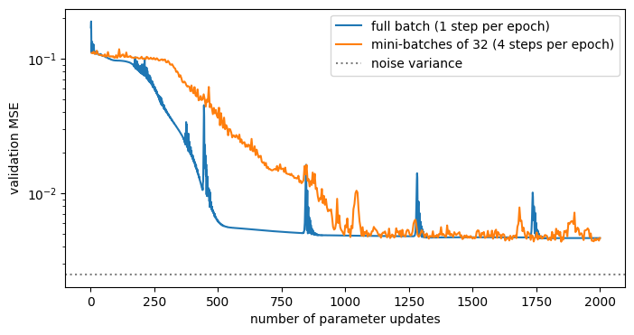
Both runs perform 2000 parameter updates and end at similar losses (validation \(4.65\cdot10^{-3}\) with mini-batches against \(4.64\cdot10^{-3}\) with the full batch). The mini-batch curve is noisier, because every step uses a different random subset of the data. For this small data set the full batch is cheap; for real data sets (millions of samples) only mini-batches are feasible.
12. A reusable training function, model selection and saving
The loop of Section 11.2 is now written once as a function train, which we use to compare architectures. The four architectures span almost three orders of magnitude in the number of parameters (13 to 8513), from too small to more than enough; any similar sequence shows the same trend. The default n_epochs=300 (1200 updates) is smaller than the 2000 updates of Sections 10–11 to keep the comparison fast.
Code
def train(model, X_train, Y_train, X_val, Y_val, n_epochs=300, batch_size=32, lr=1e-2, seed=0):"""Train `model` with Adam and mini-batches; return the training and validation loss per epoch.""" torch.manual_seed(seed) # reproducible shuffling of the mini-batches loader = DataLoader(TensorDataset(X_train, Y_train), batch_size=batch_size, shuffle=True) optimizer = torch.optim.Adam(model.parameters(), lr=lr) loss_fn = nn.MSELoss() history = {"train": [], "val": []}for epoch inrange(n_epochs): model.train() batch_losses = []for xb, yb in loader: loss = loss_fn(model(xb), yb) optimizer.zero_grad() loss.backward() optimizer.step() batch_losses.append(loss.item()) model.eval()with torch.no_grad(): history["val"].append(loss_fn(model(X_val), Y_val).item()) history["train"].append(np.mean(batch_losses))return historyarchitectures = [[1, 4, 1], [1, 32, 1], [1, 32, 32, 1], [1, 64, 64, 64, 1]]fig, axes = plt.subplots(1, 2, figsize=(14, 4))trained = {}for sizes in architectures: torch.manual_seed(0) m = make_mlp(sizes) hist = train(m, X_train, Y_train, X_val, Y_val) trained[str(sizes)] = m # a list cannot be a dictionary key, so its text "[1, 4, 1]" is used n_par =sum(p.numel() for p in m.parameters()) axes[0].semilogy(hist["val"], label=f"{sizes} ({n_par} parameters)")with torch.no_grad(): axes[1].plot(t_plot, m(X_plot), lw=1.5, label=str(sizes))print(f"{str(sizes):20s} parameters {n_par:6d} final validation MSE {hist['val'][-1]:.2e}")axes[0].axhline(0.05**2, color="gray", ls=":"); axes[0].set_xlabel("epoch"); axes[0].set_ylabel("validation MSE"); axes[0].legend(fontsize=8)axes[1].plot(t_plot, damped_oscillation(t_plot), "k", lw=1, label="true function")axes[1].set_xlabel("$t$"); axes[1].set_ylabel("$y$"); axes[1].legend(fontsize=8)fig.tight_layout(); plt.show()
[1, 4, 1] parameters 13 final validation MSE 9.86e-02
[1, 32, 1] parameters 97 final validation MSE 9.25e-02
[1, 32, 32, 1] parameters 1153 final validation MSE 4.95e-03
The two one-hidden-layer networks remain far from the noise level (validation MSE \(9.86\cdot10^{-2}\) and \(9.25\cdot10^{-2}\)), although Section 3 introduced exactly this kind of network through the Universal Approximation Theorem. The theorem guarantees that suitable parameters exist for a large enough \(N\); it says nothing about whether a given optimiser finds them within a given number of steps. Here the networks with one hidden layer converge much more slowly and are far from converged after 300 epochs. Trained longer (measured separately, same seeds), [1, 32, 1] reaches a validation MSE of about \(9\cdot10^{-3}\) after 1000 epochs and \(7\cdot10^{-3}\) after 3000, while [1, 32, 32, 1] is at about \(4\cdot10^{-3}\) already after 1000 epochs. With a fixed training budget the deeper networks reach a good fit much faster.
The architecture is chosen by the validation loss, and only for the chosen model is the test loss computed, once; it estimates the error on new data. Choosing by the test loss would turn the test set into a second validation set, and the estimate would be too optimistic.
Code
val_final = {}for name, m in trained.items(): m.eval()with torch.no_grad(): val_final[name] = loss_fn(m(X_val), Y_val).item()# min over a dictionary runs over its keys; key=val_final.get compares the keys by their values val_final[name],# so the result is the name of the architecture with the smallest validation lossbest_name =min(val_final, key=val_final.get)best = trained[best_name]with torch.no_grad(): test_loss = loss_fn(best(X_test), Y_test).item()print("validation MSE per architecture:", {k: f"{v:.2e}"for k, v in val_final.items()}) # dictionary comprehension, for formatting onlyprint(f"chosen: {best_name}; test MSE = {test_loss:.2e} (noise variance {0.05**2:.1e})")
The chosen network reaches a test MSE of \(5.30\cdot10^{-3}\), about twice the noise variance. The two largest networks have nearly equal validation losses, and the difference is smaller than the spread caused by the random initialisation alone: repeated with the seeds 0–4, the final validation MSE varies between \(4.5\cdot10^{-3}\) and \(6.1\cdot10^{-3}\) for [1, 32, 32, 1] and between \(4.0\cdot10^{-3}\) and \(8.4\cdot10^{-3}\) for [1, 64, 64, 64, 1]. The smaller network would therefore be an equally good and cheaper choice; the rule “smallest validation loss” applied to a single run is a simplification.
Once chosen, a trained model is saved as its state_dict (the parameter tensors). To load it, a model with the same architecture is created and the stored tensors are copied into it.
torch.save(obj, filename) writes a Python object containing tensors to a file (the extension .pt is a convention), and torch.load(filename) reads it back. The state_dict contains only names and numbers, so the file does not depend on the Python code of the model; that code (here make_mlp and the list of layer sizes) is needed to rebuild the architecture before load_state_dict fills in the values. We check that the restored model gives the same outputs as the original.
Code
torch.save(best.state_dict(), "damped_oscillation_model.pt") # the chosen model, as a file in the current directorysizes_by_name = {str(sizes): sizes for sizes in architectures} # "[1, 32, 1]" -> [1, 32, 1]restored = make_mlp(sizes_by_name[best_name]) # same architecture, new random parametersrestored.load_state_dict(torch.load("damped_oscillation_model.pt"))restored.eval()with torch.no_grad():print("max |original - restored|:", (best(X_plot) - restored(X_plot)).abs().max().item())
max |original - restored|: 0.0
13. Common bugs
Four mistakes appear again and again in training code, and most of them raise no error, so it pays to recognise their symptoms.
13.1 Output and target of different shapes
The model returns shape (B, 1). If the targets have shape (B,), broadcasting turns pred - y into a (B, B) matrix of all pairwise differences. nn.MSELoss only warns, and an explicit torch.mean((pred - y)**2) does not even warn. The loss value is wrong and training fits the wrong objective.
Python’s module warnings normally prints a warning once and does not pass it to the program. To show the message in the output below, it is captured: warnings.catch_warnings(record=True) collects the warnings raised inside the with block into the list w, and simplefilter("always") makes sure the warning is recorded even if the same warning was shown before.
Code
import warningspred = best(X_train).detach() # shape (120, 1)y_wrong = Y_train.reshape(-1) # shape (120,) <- the bugprint("shape of pred - y_wrong:", tuple((pred - y_wrong).shape))with warnings.catch_warnings(record=True) as w: warnings.simplefilter("always") wrong = loss_fn(pred, y_wrong).item()print("warning raised by nn.MSELoss:", str(w[0].message)[:90] if w else"none")print(f"loss with correct shapes: {loss_fn(pred, Y_train).item():.2e} with the shape bug: {wrong:.2e}")
shape of pred - y_wrong: (120, 120)
warning raised by nn.MSELoss: Using a target size (torch.Size([120])) that is different to the input size (torch.Size([1
loss with correct shapes: 3.02e-03 with the shape bug: 2.52e-01
The loss with the shape bug, \(2.52\cdot10^{-1}\), is almost a hundred times the correct value \(3.02\cdot10^{-3}\), and it is not the quantity we want to minimise.
13.2 Forgetting optimizer.zero_grad()
Gradients accumulate in .grad. Without resetting them, .grad holds the sum of all gradients computed so far: it grows from step to step, and the updates no longer follow the gradient of the current loss. To see this, we repeat the Adam training of Section 10.4, shortened to 1000 steps, once with and once without zero_grad(). At the end we also print the norm of the gradient stored in the first layer, and the cosine of the angle between the stored gradient (all parameters joined into one vector) and the true gradient of the current loss, computed separately with torch.autograd.grad. A cosine of \(+1\) means the same direction, \(-1\) the opposite one.
Code
fig, ax = plt.subplots(figsize=(8, 4))for reset in [True, False]: torch.manual_seed(1) m = make_mlp([1, 32, 32, 1]) opt = torch.optim.Adam(m.parameters(), lr=1e-2) hist = []for step inrange(1000): loss = loss_fn(m(X_train), Y_train)if reset: opt.zero_grad() loss.backward() opt.step() hist.append(loss.item()) label ="with zero_grad()"if reset else"without zero_grad()" ax.semilogy(hist, label=label) stored = torch.cat([p.grad.flatten() for p in m.parameters()]) # what the optimiser uses true = torch.cat([g.flatten() for g in torch.autograd.grad(loss_fn(m(X_train), Y_train), list(m.parameters()))]) cosine = torch.dot(stored, true) / (stored.norm() * true.norm())print(f"{label:20s}: loss after 1000 steps = {hist[-1]:.2e}, |grad| of first layer = {m[0].weight.grad.norm().item():.1e},"f" cosine(stored, true gradient) = {cosine.item():+.3f}")ax.set_xlabel("step"); ax.set_ylabel("training MSE"); ax.legend(); plt.show()
with zero_grad() : loss after 1000 steps = 2.74e-03, |grad| of first layer = 1.0e-04, cosine(stored, true gradient) = +0.548
without zero_grad() : loss after 1000 steps = 2.84e+02, |grad| of first layer = 2.0e+02, cosine(stored, true gradient) = -0.999
Without zero_grad() the loss grows instead of decreasing (\(2.84\cdot10^{2}\) after 1000 steps against \(2.74\cdot10^{-3}\)), and the stored gradient becomes much larger than the true gradient (in a re-run, about two orders of magnitude; the true gradient is itself large because the loss is large). The first-layer norms printed above (\(2\cdot10^{2}\) against \(10^{-4}\)) compare the two runs, not the stored and the true gradient of the same run. The size alone would not harm Adam much, since Adam divides each update by a running average of the gradient size. The harm comes from the direction: the stored .grad is the sum of all past gradients, dominated by the old ones, and no longer follows the gradient of the current loss. At the end of this run the cosine is \(-0.999\): the updates point uphill. With zero_grad() the cosine, \(+0.548\), is positive but below 1 because the stored gradient belongs to the parameters before the last step(), while the true gradient is computed after it. No error is raised; only the loss curve reveals the bug.
13.3 Data in float64, model in float32
Arrays created by NumPy are float64, while model parameters are float32. Mixing them raises an error in the first layer; converting the input with .float() fixes it.
Code
x64 = torch.tensor(scale(t_data[:5])).reshape(-1, 1) # dtype float64, taken over from NumPytry: best(x64)exceptRuntimeErroras e:print("RuntimeError:", e)print("fixed:", tuple(best(x64.float()).shape)) # .float() converts to float32
RuntimeError: mat1 and mat2 must have the same dtype, but got Double and Float
fixed: (5, 1)
13.4 Inputs on a large scale
The last bug concerns the scale of the inputs discussed in Section 10.1. We train the same network on the raw times \(t\in[0, 10]\) instead of the rescaled \([-1, 1]\) and compare the validation losses.
Code
X_train_raw = torch.tensor(t_data[train_idx.numpy()], dtype=torch.float32).reshape(-1, 1)X_val_raw = torch.tensor(t_data[val_idx.numpy()], dtype=torch.float32).reshape(-1, 1)fig, ax = plt.subplots(figsize=(8, 4))# every value of the dictionary is a pair (training inputs, validation inputs); (Xt, Xv) unpacks the pairfor name, (Xt, Xv) in {"rescaled input [-1, 1]": (X_train, X_val), "raw input [0, 10]": (X_train_raw, X_val_raw)}.items(): torch.manual_seed(0) m = make_mlp([1, 32, 32, 1]) hist = train(m, Xt, Y_train, Xv, Y_val) ax.semilogy(hist["val"], label=name)print(f"{name:25s} final validation MSE {hist['val'][-1]:.2e}")ax.axhline(0.05**2, color="gray", ls=":", label="noise variance")ax.set_xlabel("epoch"); ax.set_ylabel("validation MSE"); ax.legend(); plt.show()
rescaled input [-1, 1] final validation MSE 4.95e-03
raw input [0, 10] final validation MSE 1.84e-02
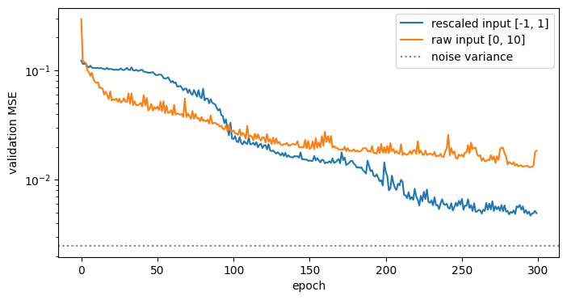
With the raw input the validation MSE is \(1.84\cdot10^{-2}\) instead of \(4.95\cdot10^{-3}\). The first-layer nodes \(\tanh(W t + b)\) are saturated over most of the interval, their gradients are small, and the same number of epochs gives a worse result. Rescaling inputs (and, for targets of very different size, outputs) to order one is a standard preprocessing step.
14. Training the image classifier on MNIST
Section 6 built the classifier and showed that the untrained network guesses. With the training loop of Sections 10–12 it can now be trained; the only new ingredient is the loss function for classification.
14.1 Training, validation and test images
The 10 000 test images of Section 6 (images, labels) remain the test set, used once at the end. The 60 000 training images (train=True, already downloaded in Section 6, since torchvision always downloads both parts) are split at random into 50 000 for training and 10 000 for validation.
Code
try:with contextlib.redirect_stdout(io.StringIO()), contextlib.redirect_stderr(io.StringIO()): mnist_train = datasets.MNIST(root="data", train=True, download=True) X_all, y_all = mnist_train.data.float() /255, mnist_train.targetsexceptExceptionas err:print("MNIST training set could not be loaded:", err, " -> random images (the results below are then meaningless)") X_all, y_all = torch.rand(60000, 28, 28), torch.randint(0, 10, (60000,))perm = torch.randperm(60000, generator=torch.Generator().manual_seed(0)) # a random order of the 60 000 indicesX_tr, y_tr = X_all[perm[:50000]], y_all[perm[:50000]] # training setX_va, y_va = X_all[perm[50000:]], y_all[perm[50000:]] # validation setX_te, y_te = images, labels # test set (Section 6)print("training:", tuple(X_tr.shape), " validation:", tuple(X_va.shape), " test:", tuple(X_te.shape))
For classification the loss is the cross-entropy (lecture). For one image with true class \(y\) and predicted probabilities \(q_k = \mathrm{softmax}(z)_k\), \[\ell = -\log q_y ,\] the negative logarithm of the probability that the network gives to the correct class: \(\ell = 0\) if \(q_y = 1\), and \(\ell\) grows without bound as \(q_y \to 0\). The loss of a batch is the mean over its images.
nn.CrossEntropyLoss() (stored as ce_loss, so that loss_fn, the MSE loss of Section 10 used again in the exercises, is not overwritten) takes the logits of shape (B, 10) and the labels as integers of shape (B,) (dtype int64, which labels already has); it applies the softmax itself, so the model must not end with a softmax layer. The label is used as an index: it picks \(q_y\) out of the ten probabilities.
The accuracy, the fraction of correctly classified images, is what we are interested in, but it cannot be used as a loss: it changes only when an image switches class, so its gradient with respect to the parameters is zero almost everywhere. The cross-entropy changes smoothly with the parameters.
Before training we check the loss of the untrained network. It gives \(q_k \approx 1/10\) for every class (Section 6), so the loss should be close to \(-\log(1/10) = \ln 10 \approx 2.30\).
Code
ce_loss = nn.CrossEntropyLoss()def accuracy(logits, y):"""Fraction of images whose largest logit is at the true class."""return (logits.argmax(dim=1) == y).float().mean().item()torch.manual_seed(0)clf = nn.Sequential(nn.Flatten(), nn.Linear(784, 128), nn.ReLU(), nn.Linear(128, 64), nn.ReLU(), nn.Linear(64, 10))with torch.no_grad(): z = clf(X_va)print(f"untrained: loss {ce_loss(z, y_va).item():.3f} (ln 10 = {np.log(10):.3f}), accuracy {accuracy(z, y_va):.3f}")
untrained: loss 2.303 (ln 10 = 2.303), accuracy 0.108
14.3 The training loop
The loop is that of Section 11 with mini-batches, written out here because the loss and the recorded quantities differ. The images are processed in mini-batches of 64, in a new random order in every epoch (torch.randperm), with Adam at learning rate \(10^{-3}\), the default of Adam; 64 is a common batch size, and values from 32 to 256 work as well. After every epoch the loss and accuracy on the training and validation sets are computed for all images at once, inside torch.no_grad() (Section 10.4). The training loss is evaluated after the epoch, with the final parameters of that epoch, so that it can be compared with the validation loss. We train for 10 epochs (10 passes over the 50 000 training images). One epoch takes about a second on a CPU; the number is chosen so that the cell runs in about ten seconds and shows where the validation loss stops improving.
model.train() and model.eval() (Section 11.2) make no difference for this network (no dropout or batch normalisation) and are written for completeness.
Code
torch.manual_seed(0)clf = nn.Sequential(nn.Flatten(), nn.Linear(784, 128), nn.ReLU(), nn.Linear(128, 64), nn.ReLU(), nn.Linear(64, 10))optimizer = torch.optim.Adam(clf.parameters(), lr=1e-3)batch_size, n_epochs =64, 10log = {"train loss": [], "val loss": [], "train acc": [], "val acc": []}t0 = time.perf_counter()for epoch inrange(1, n_epochs +1): clf.train() order = torch.randperm(len(X_tr)) # new random order of the training imagesfor start inrange(0, len(X_tr), batch_size): idx = order[start:start + batch_size] # indices of one mini-batch optimizer.zero_grad() loss = ce_loss(clf(X_tr[idx]), y_tr[idx]) loss.backward() optimizer.step() clf.eval()with torch.no_grad(): z_tr, z_va = clf(X_tr), clf(X_va) log["train loss"].append(ce_loss(z_tr, y_tr).item()); log["train acc"].append(accuracy(z_tr, y_tr)) log["val loss"].append(ce_loss(z_va, y_va).item()); log["val acc"].append(accuracy(z_va, y_va))print(f"epoch {epoch:2d}: loss train {log['train loss'][-1]:.4f} val {log['val loss'][-1]:.4f} "f"accuracy train {log['train acc'][-1]:.4f} val {log['val acc'][-1]:.4f}")print(f"training took {time.perf_counter() - t0:.0f} s")
epoch 1: loss train 0.1856 val 0.2002 accuracy train 0.9473 val 0.9434
epoch 2: loss train 0.1144 val 0.1393 accuracy train 0.9669 val 0.9581
epoch 3: loss train 0.0860 val 0.1140 accuracy train 0.9747 val 0.9665
epoch 4: loss train 0.0649 val 0.1044 accuracy train 0.9808 val 0.9691
epoch 5: loss train 0.0504 val 0.0947 accuracy train 0.9847 val 0.9736
epoch 6: loss train 0.0338 val 0.0844 accuracy train 0.9902 val 0.9747
epoch 7: loss train 0.0353 val 0.0984 accuracy train 0.9891 val 0.9725
epoch 8: loss train 0.0233 val 0.0852 accuracy train 0.9928 val 0.9753
epoch 9: loss train 0.0205 val 0.0867 accuracy train 0.9940 val 0.9747
epoch 10: loss train 0.0152 val 0.0898 accuracy train 0.9956 val 0.9770
training took 1204 s
14.4 Learning curves
The printed numbers are easier to read as curves. The figure shows the training and validation loss (left) and accuracy (right) after each epoch.
Both losses fall quickly during the first epochs. Afterwards they separate: the training loss keeps falling (from about 0.19 after the first epoch to about 0.015 after the tenth), while the validation loss reaches its smallest value after about 6 epochs (about 0.085) and then stays at that level or rises slightly. This is the onset of overfitting: the network begins to adapt to details of the 50 000 training images that do not carry over to new images. The same is seen in the accuracies: about 99.6% on the training set but about 97.7% on the validation set.
The validation accuracy still increases a little while the validation loss no longer decreases. The two measure different things: the accuracy counts only whether the largest probability is at the right class, the cross-entropy also measures how confident the network is. As training continues, the network gets a few more images right, but it also becomes more confident everywhere, and pays a large loss \(-\log q_y\) for every image on which it is confidently wrong.
14.5 Evaluation on the test set
The test set is used once, for the final numbers. Besides the accuracy, two views show which mistakes the network makes. The first is the confusion matrix\(C_{ij}\), the number of test images of true class \(i\) that were classified as \(j\), with the correct answers on the diagonal. It is computed with one bincount: the pair \((i, j)\) is encoded as the single number \(10i + j\), the occurrences of every number \(0, \dots, 99\) are counted, and the counts are arranged as a \(10\times10\) matrix with reshape. The second view is a gallery of misclassified images with their true and predicted classes.
Code
with torch.no_grad(): pred_te = clf(X_te).argmax(dim=1)print(f"test accuracy: {(pred_te == y_te).float().mean().item():.4f} ({(pred_te != y_te).sum().item()} of {len(y_te)} test images misclassified)")C = torch.bincount(10* y_te + pred_te, minlength=100).reshape(10, 10)fig, ax = plt.subplots(figsize=(6.5, 5.5))im = ax.imshow(torch.log10(C +1), cmap="Blues") # logarithmic colours: the diagonal (about 1000) would hide the restfor i inrange(10):for j inrange(10):if C[i, j] >0: ax.text(j, i, str(C[i, j].item()), ha="center", va="center", fontsize=7, color="white"if i == j else"black")ax.set_xticks(range(10)); ax.set_yticks(range(10))ax.set_xlabel("predicted class $j$"); ax.set_ylabel("true class $i$"); ax.set_title("confusion matrix (test set)")plt.show()wrong = torch.nonzero(pred_te != y_te)[:, 0] # positions of the misclassified test imagesfig, axes = plt.subplots(2, 8, figsize=(12, 3.6))for ax, k inzip(axes.flat, wrong[:16]): ax.imshow(images_raw[k], cmap="gray_r") ax.set_title(f"true {y_te[k].item()}, pred {pred_te[k].item()}", fontsize=9) ax.set_xticks([]); ax.set_yticks([])fig.tight_layout(); plt.show()
test accuracy: 0.9756 (244 of 10000 test images misclassified)
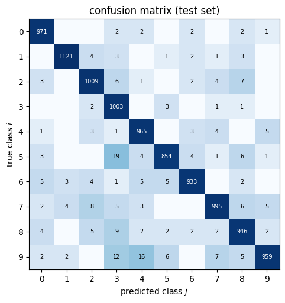
The test accuracy (97.6%, i.e. 244 misclassified images out of 10 000) agrees with the validation accuracy of the last epoch (97.7%): since neither set was used for training, both estimate the accuracy on new images.
In the confusion matrix almost all images lie on the diagonal. The largest off-diagonal entries in our run are true 5 classified as 3, true 9 classified as 4, and true 9 classified as 3: pairs of digits whose shapes are similar. The misclassified images show that a part of the mistakes concerns digits that are hard to read also for a human; others are well readable and are genuine errors of the network.
The network reaches this accuracy without any notion that the input is an image: it treats the 784 pixels as an unordered list of numbers. Convolutional networks, which use the two-dimensional arrangement of the pixels, reach above 99% on MNIST; they are the subject of a later lecture.
15. Summary
A dense network is defined by its layer sizes \([n_0,\dots,n_L]\) and its activation; layer \(l\) has a weight matrix of shape \(n_l\times n_{l-1}\) and a bias vector of length \(n_l\). nn.Sequential(...) builds a chain of layers, while a class derived from nn.Module (layers in __init__, computation in forward) builds any architecture; both are used in the same way, through model(x), model.parameters() and model.state_dict(). Networks of arbitrary depth are built in a loop, either as a list of layers passed to nn.Sequential(*layers) or as an nn.ModuleList in a class, but never as a plain Python list.
A training step consists of the forward pass, the loss, zero_grad(), backward() and step(). Mini-batches are provided by DataLoader, and one epoch is one pass over the training data. The data are divided into three sets: the training set fits the parameters, the validation set is used to monitor training and to choose, and the test set gives the final estimate and is used once. The validation loss is monitored inside torch.no_grad(), model.train() and model.eval() switch between the two modes, and a model is saved with torch.save(model.state_dict(), ...). The most common silent bugs concern shapes ((B, 1) against (B,)), dtypes (float32) and the scale of the inputs. For classification (Section 14) the network has one output per class and is trained with nn.CrossEntropyLoss on the logits with integer labels, and the accuracy and the confusion matrix serve for evaluation.
16. Exercises
Exercise 1 — One architecture, three constructions
Build the network with layer sizes \([2, 32, 32, 1]\) and \(\tanh\) activations in three ways: (a) nn.Sequential written out layer by layer, (b) make_mlp, (c) the class MLP of Section 7.2. Draw it with draw_network, check that all three have the same number of parameters, and compare it with the formula \(\sum_l n_l(n_{l-1}+1)\). Then copy the parameters of (a) into (c) and verify that both give the same output for a batch of 10 random points. Hint: the Linear layers of (a) are model_a[0], model_a[2], model_a[4]; those of (c) are model_c.layers[0], [1], [2].
Solution
Code
sizes = [2, 32, 32, 1]draw_network(sizes, activations=["tanh", "tanh"], title="Exercise 1", input_labels=["$x$", "$y$"], output_labels=["$f$"])plt.show()# (a) written out layer by layermodel_a = nn.Sequential(nn.Linear(2, 32), nn.Tanh(), nn.Linear(32, 32), nn.Tanh(), nn.Linear(32, 1))# (b) from the list of layer sizesmodel_b = make_mlp(sizes)# (c) the class with nn.ModuleListmodel_c = MLP(sizes)formula =sum(n_out * (n_in +1) for n_in, n_out inzip(sizes[:-1], sizes[1:]))for name, m in [("(a) Sequential by hand", model_a), ("(b) make_mlp", model_b), ("(c) MLP class", model_c)]:print(f"{name:25s} parameters = {sum(p.numel() for p in m.parameters())}")print("formula:", formula, "= 32*(2+1) + 32*(32+1) + 1*(32+1)")# copy the parameters of (a) into (c): Linear layers of (a) are at positions 0, 2, 4 (the others are activations)with torch.no_grad():for layer_c, layer_a inzip(model_c.layers, [model_a[0], model_a[2], model_a[4]]): layer_c.weight.copy_(layer_a.weight) layer_c.bias.copy_(layer_a.bias)points = torch.rand(10, 2)with torch.no_grad():print("max |output (a) - output (c)|:", (model_a(points) - model_c(points)).abs().max().item())
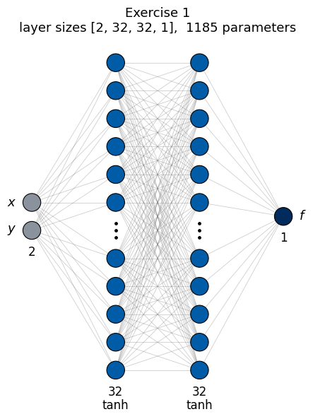
(a) Sequential by hand parameters = 1185
(b) make_mlp parameters = 1185
(c) MLP class parameters = 1185
formula: 1185 = 32*(2+1) + 32*(32+1) + 1*(32+1)
max |output (a) - output (c)|: 0.0
Exercise 2 — Fitting a function of two variables
Fit the 2D double-well potential \(V(x, y) = (x^2 - 1)^2 + \tfrac12 y^2\) on \([-1.5, 1.5]\times[-1.5, 1.5]\). 1. Generate 2000 random points \((x, y)\) in the square with values \(V(x,y)\) and split them into training (1400), validation (300) and test (300) sets. Inputs have shape (B, 2), targets (B, 1). 2. Train make_mlp([2, 64, 64, 1]) with the function train of Section 12 (mini-batches of 64, 200 epochs, lr=1e-2). Plot training and validation loss versus epoch. 3. Compute the test MSE once at the end. Show the true potential, the network and their difference as images on a \(100\times100\) grid.
The inputs \(x, y\in[-1.5, 1.5]\) and the values \(V\in[0, 2.7]\) are already of order one, so no rescaling is needed. A function of two variables needs more samples than one of a single variable to cover its domain, hence 2000 points and a somewhat wider network. The batch size, the number of epochs and the learning rate are reasonable defaults, not tuned values: changing any one of them by a factor of 2–3 (measured: batch 32 or 128, 100 or 400 epochs, lr\(3\cdot10^{-3}\) or \(3\cdot10^{-2}\)) gives final validation errors between \(1\cdot10^{-4}\) and \(2\cdot10^{-3}\), all small compared with the range of \(V\).
Solution
Code
def V2d(x, y):return (x**2-1)**2+0.5* y**2# 1) data: random points in the square, split 1400 / 300 / 300rng2 = np.random.default_rng(1)P = rng2.uniform(-1.5, 1.5, size=(2000, 2)) # each row is a point (x, y)Z = V2d(P[:, 0], P[:, 1])X2 = torch.tensor(P, dtype=torch.float32) # shape (2000, 2)Y2 = torch.tensor(Z, dtype=torch.float32).reshape(-1, 1) # shape (2000, 1)X2_train, X2_val, X2_test = X2[:1400], X2[1400:1700], X2[1700:] # the points are already in random orderY2_train, Y2_val, Y2_test = Y2[:1400], Y2[1400:1700], Y2[1700:]# 2) trainingtorch.manual_seed(0)model_2d = make_mlp([2, 64, 64, 1])t0 = time.perf_counter()hist_2d = train(model_2d, X2_train, Y2_train, X2_val, Y2_val, n_epochs=200, batch_size=64, lr=1e-2)print(f"training took {time.perf_counter() - t0:.0f} s")# 3) test loss (once) and imagesmodel_2d.eval()with torch.no_grad(): test_mse = loss_fn(model_2d(X2_test), Y2_test).item()print(f"final training MSE {hist_2d['train'][-1]:.2e}, validation MSE {hist_2d['val'][-1]:.2e}, test MSE {test_mse:.2e}")g1 = np.linspace(-1.5, 1.5, 100)GX, GY = np.meshgrid(g1, g1)# ravel() turns each 100 x 100 grid into a list of 10 000 numbers; stack(..., axis=1) puts them side by side as the# columns x and y, giving the batch of shape (10000, 2) that the network expects. reshape(100, 100) undoes this for the image.grid_points = torch.tensor(np.stack([GX.ravel(), GY.ravel()], axis=1), dtype=torch.float32)with torch.no_grad(): V_net = model_2d(grid_points).numpy().reshape(100, 100)V_true = V2d(GX, GY)fig, axes = plt.subplots(1, 4, figsize=(20, 4))axes[0].semilogy(hist_2d["train"], label="training"); axes[0].semilogy(hist_2d["val"], label="validation")axes[0].set_xlabel("epoch"); axes[0].set_ylabel("MSE"); axes[0].legend()for ax, img, title inzip(axes[1:], [V_true, V_net, V_net - V_true], ["true $V$", "network", "network $-$ true"]): im = ax.imshow(img, origin="lower", extent=[-1.5, 1.5, -1.5, 1.5], cmap="viridis"if title !="network $-$ true"else"RdBu_r") fig.colorbar(im, ax=ax, shrink=0.8); ax.set_title(title); ax.set_xlabel("$x$"); ax.set_ylabel("$y$")fig.tight_layout(); plt.show()# The square root of the test MSE is the typical error of the network in the units of V: about 0.03,# compared with values of V between 0 and 2.7. The difference image shows where these errors are located.
training took 324 s
final training MSE 8.47e-04, validation MSE 8.06e-04, test MSE 6.87e-04
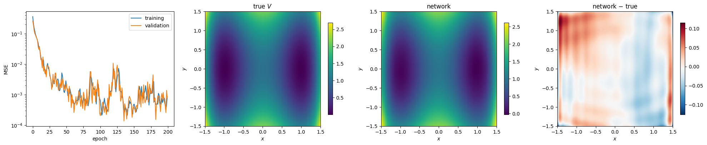
Exercise 3 — A classification task
Points \((x, y)\) belong to class 0 if their distance from the origin is below 1 and to class 1 if it is between 1.3 and 2 (two rings, no point in between). 1. Generate 600 points of each class (sample the radius uniformly in the ring and the angle uniformly), shuffle them and split 800 / 200 / 200. 2. Train make_mlp([2, 16, 16, 2]) (two outputs = two class scores) with nn.CrossEntropyLoss, which takes the scores of shape (B, 2) and the integer labels of shape (B,) (dtype torch.long), and applies softmax internally. One score per class (rather than a single output) makes the same code work for any number of classes. The labels are integers because the loss uses them as indices, to pick the score of the correct class. Use Adam, lr=1e-2, full batch, 300 steps; record training and validation loss. 3. Report the accuracy (fraction of correctly classified points) on the validation and, at the end, on the test set. 4. Plot the decision boundary: the predicted class on a grid of points, with the data on top.
The function train of Section 12 uses nn.MSELoss, so the training loop is written out explicitly here.
Solution
Code
# 1) data: two ringsrng3 = np.random.default_rng(2)def ring(n, r_min, r_max): r = rng3.uniform(r_min, r_max, n) phi = rng3.uniform(0, 2* np.pi, n)return np.stack([r * np.cos(phi), r * np.sin(phi)], axis=1)points_rings = np.concatenate([ring(600, 0.0, 1.0), ring(600, 1.3, 2.0)])labels_rings = np.concatenate([np.zeros(600), np.ones(600)])order = rng3.permutation(1200) # shuffle points and labels togetherXc = torch.tensor(points_rings[order], dtype=torch.float32)Yc = torch.tensor(labels_rings[order], dtype=torch.long) # integer class labels, shape (1200,)Xc_train, Xc_val, Xc_test = Xc[:800], Xc[800:1000], Xc[1000:]Yc_train, Yc_val, Yc_test = Yc[:800], Yc[800:1000], Yc[1000:]# 2) model and training looptorch.manual_seed(0)clf_rings = make_mlp([2, 16, 16, 2]) # outputs: one score (logit) per classce_loss_rings = nn.CrossEntropyLoss()opt = torch.optim.Adam(clf_rings.parameters(), lr=1e-2)hist_tr, hist_va = [], []for step inrange(300): loss = ce_loss_rings(clf_rings(Xc_train), Yc_train) # scores (800, 2) vs labels (800,) opt.zero_grad(); loss.backward(); opt.step()with torch.no_grad(): hist_va.append(ce_loss_rings(clf_rings(Xc_val), Yc_val).item()) hist_tr.append(loss.item())# 3) accuracy: the predicted class is the one with the larger score.# argmax(dim=1) gives, for every row, the index of the largest entry. Softmax does not change the order of the# scores, so this is also the class of highest probability, and softmax need not be computed.# (... == Y) is a tensor of True/False; .float() turns it into 1.0/0.0, and its mean is the fraction of correct answers.def accuracy_of(model, X, Y):with torch.no_grad():return (model(X).argmax(dim=1) == Y).float().mean().item()print(f"validation accuracy: {accuracy_of(clf_rings, Xc_val, Yc_val):.3f}")print(f"test accuracy (computed once at the end): {accuracy_of(clf_rings, Xc_test, Yc_test):.3f}")# The two classes are separated by an empty ring (1 < r < 1.3), so a perfect classification is possible.# Without the gap (e.g. class 1 for 1 < r < 2) points near r = 1 would be harder, and the accuracy would drop below 1.# 4) decision boundaryg = np.linspace(-2.2, 2.2, 200)GX, GY = np.meshgrid(g, g)grid = torch.tensor(np.stack([GX.ravel(), GY.ravel()], axis=1), dtype=torch.float32)with torch.no_grad(): pred_class = clf_rings(grid).argmax(dim=1).numpy().reshape(200, 200)fig, axes = plt.subplots(1, 2, figsize=(13, 5))axes[0].plot(hist_tr, label="training"); axes[0].plot(hist_va, label="validation")axes[0].set_yscale("log"); axes[0].set_xlabel("step"); axes[0].set_ylabel("cross-entropy"); axes[0].legend()# the classes are the integers 0 and 1: boundaries at -0.5, 0.5, 1.5 give exactly one colour to each classaxes[1].contourf(GX, GY, pred_class, levels=[-0.5, 0.5, 1.5], colors=["C0", "C1"], alpha=0.25)# Xc_train[Yc_train == 0]: indexing with a True/False tensor keeps the rows where the condition holds (shape (n, 2));# .T turns it into two rows x and y, and * passes them as the two arguments of scatteraxes[1].scatter(*Xc_train[Yc_train ==0].T, s=5, color="C0", label="class 0")axes[1].scatter(*Xc_train[Yc_train ==1].T, s=5, color="C1", label="class 1")axes[1].set_aspect("equal"); axes[1].set_xlabel("$x$"); axes[1].set_ylabel("$y$"); axes[1].legend(loc="upper right")axes[1].set_title("predicted class (background) and training data")fig.tight_layout(); plt.show()
validation accuracy: 1.000
test accuracy (computed once at the end): 1.000
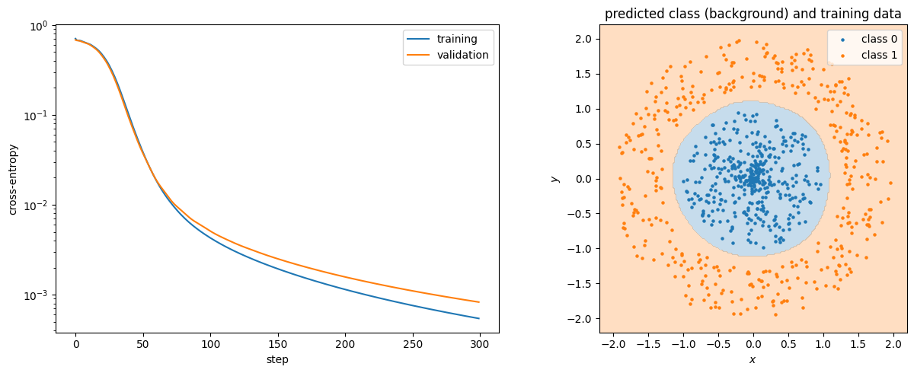
Exercise 4 — Boundary conditions built into the network
The ground state of a particle in a box \([0, 1]\) is \(\psi_\ast(x) = \sqrt2\sin(\pi x)\). Fit it from 15 noisy samples (\(\sigma = 0.05\)) at random points in \([0, 1]\) with (a) BoxWavefunction([1, 16, 16, 1]) of Section 8.2 and (b) an unconstrained make_mlp([1, 16, 16, 1]). Train both with Adam (lr=1e-2, full batch, 2000 steps). Compare the values at \(x = 0\) and \(x = 1\) and the maximal error on a dense grid, and plot both fits. Which model respects the physics, and where does the unconstrained one go wrong?
Few samples are used on purpose: the regions between the outermost samples and the walls are then not covered by data, which exposes the difference between the two models.
Solution
Code
rng4 = np.random.default_rng(3)x_s = np.sort(rng4.uniform(0, 1, 15))y_s = np.sqrt(2) * np.sin(np.pi * x_s) +0.05* rng4.normal(size=15)Xs = torch.tensor(x_s, dtype=torch.float32).reshape(-1, 1)Ys = torch.tensor(y_s, dtype=torch.float32).reshape(-1, 1)def fit(model, steps=2000): opt = torch.optim.Adam(model.parameters(), lr=1e-2)for _ inrange(steps): loss = loss_fn(model(Xs), Ys) opt.zero_grad(); loss.backward(); opt.step()return modeltorch.manual_seed(0); constrained = fit(BoxWavefunction([1, 16, 16, 1]))torch.manual_seed(0); free = fit(make_mlp([1, 16, 16, 1]))x_dense = torch.linspace(0, 1, 401).reshape(-1, 1)exact = np.sqrt(2) * np.sin(np.pi * x_dense.numpy())fig, ax = plt.subplots(figsize=(8, 4.5))ax.plot(x_dense, exact, "k", lw=3, alpha=0.4, label=r"exact $\sqrt{2}\sin(\pi x)$")ax.plot(x_s, y_s, "ko", ms=5, label="15 noisy samples")for name, m in [("x(1-x) NN(x)", constrained), ("unconstrained NN(x)", free)]:with torch.no_grad(): values = m(x_dense).numpy() ax.plot(x_dense, values, lw=2, label=name)print(f"{name:20s} psi(0) = {values[0, 0]:+.3f} psi(1) = {values[-1, 0]:+.3f} max |error| = {np.max(np.abs(values - exact)):.3f}")ax.set_xlabel("$x$"); ax.set_ylabel(r"$\psi(x)$"); ax.legend(fontsize=8); plt.show()# The constrained model vanishes exactly at both walls for any parameters. The unconstrained model is only# determined where there are samples; between the outermost samples and the walls it is not forced to zero.
Exercise 5 (advanced) — Deep plain and residual networks
Train on the damped-oscillation data of Section 10 two networks of the same depth (10 hidden layers of width 16): make_mlp([1] + [16] * 10 + [1]) and ResidualMLP(1, 16, 9, 1) (one input layer plus 9 residual blocks), both with train (300 epochs). Plot their validation losses versus epoch. Before training, print the norm of the gradient of the first layer’s weights for both models (one backward pass on the training set): what does it tell us about how the signal propagates backwards through a deep plain network?
Solution
Code
torch.manual_seed(0); plain = make_mlp([1] + [16] *10+ [1])torch.manual_seed(0); resnet = ResidualMLP(1, 16, 9, 1)print("parameters: plain", sum(p.numel() for p in plain.parameters()), " residual", sum(p.numel() for p in resnet.parameters()))# gradient of the first layer before trainingfor name, m, first in [("plain", plain, plain[0]), ("residual", resnet, resnet.input_layer)]: m.zero_grad() loss_fn(m(X_train), Y_train).backward()print(f"{name:9s} |dL/dW of first layer| = {first.weight.grad.norm().item():.2e}")fig, ax = plt.subplots(figsize=(8, 4))for name, m in [("plain, 10 hidden layers", plain), ("residual, 9 blocks", resnet)]: hist = train(m, X_train, Y_train, X_val, Y_val, n_epochs=300) ax.semilogy(hist["val"], label=name)print(f"{name:25s} final validation MSE {hist['val'][-1]:.2e}")ax.axhline(0.05**2, color="gray", ls=":", label="noise variance")ax.set_xlabel("epoch"); ax.set_ylabel("validation MSE"); ax.legend(); plt.show()# In the plain network the gradient reaching the first layer is the product of many factors (one per layer), each# typically smaller than one for tanh with the default initialisation: it is much smaller than in the residual network,# where the skip connections pass the gradient directly. This is the vanishing-gradient problem.
parameters: plain 2497 residual 2497
plain |dL/dW of first layer| = 8.37e-05
residual |dL/dW of first layer| = 4.23e-01
plain, 10 hidden layers final validation MSE 1.50e-02